Specifies the text to be displayed in the text of "text Pabnel". On the right side of the window, there are separate "text panel" options that will only be used in this dialog.
Additionally, on the right side you can set the name of the character that will be displayed in the "Name panel", each new name with all the parameters will be automatically added to the character catalog, after which, when creating a new dialogue, you do not have to re-enter its name, you can select it from the list, You can additionally edit the list of characters in the project settings in the characters section. The changes you make will apply to the entire project, so you only need to change the character's name in the project settings section to make it change throughout the project.
You can display values from variables in the text of the dialog. To do this, you need to write the name of the variable in angle brackets in the text "text <var_name> text", after which it will be replaced in the project with the value from the specified variable.
If the number of phrases in the dialogs of different translations differ from each other, then you can write "skip", then the phrase will be automatically skipped in the selected localization.
To add transcription, furigana, additional anatation and texts, you can use < 簡単 = かんたん > what will be displayed as 簡単 .
Dialog toast
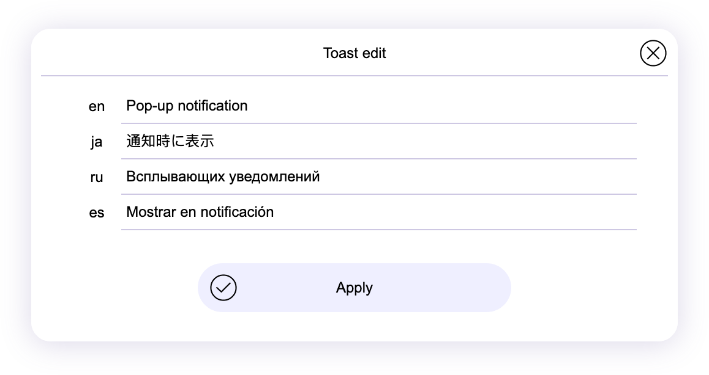
Not recommended for use
Element for the plugin of the same name, it will not appear in the elements menu until this plugin is enabled in the project settings
In it you can write a short message for Pop-up notification, at the top of the window
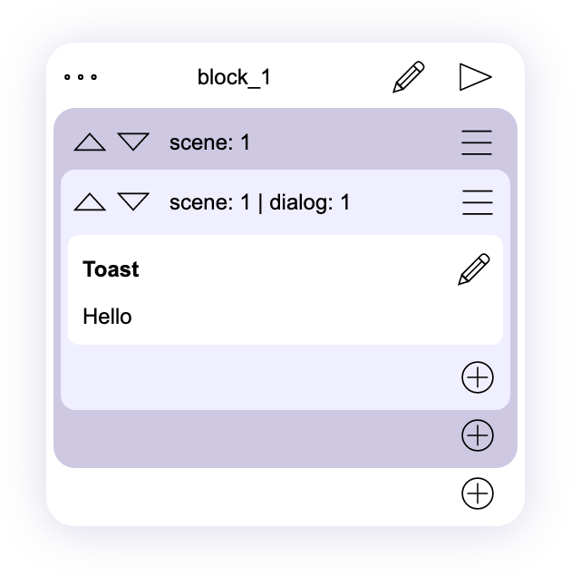
For the correct display of the element, you must specify its appearance in CSS file for the element "#toast"
JavaScript code
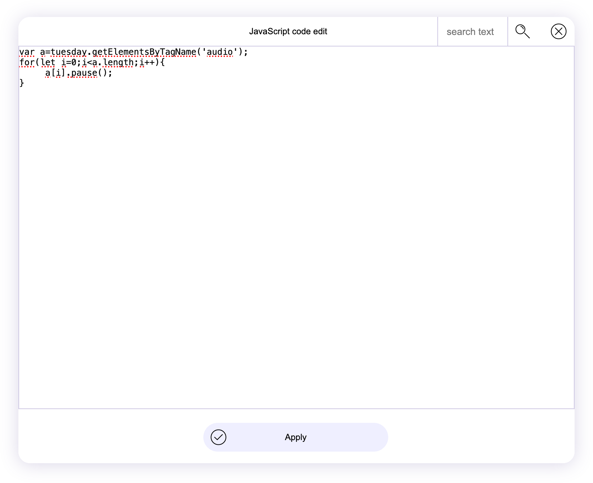
You can set JavaScript to execute after the scene or dialog is rendered. В этом случае используются стандартные браузерные JavaScript APIs.
All of Tuesday's components are in the document element ID "tuesday".
document.getElementById("tuesday");
Or in a global variable in RunTime "tuesday" so you can access elements using code
var element = tuesday.children;
All elements have default classes by which you can access them.
tue_art - Images
tue_choice - Choice buttons and other "choice" elements
tue_controll - Interface buttons
tue_html_scene - html component
Some elements have their own id.
tue_video - Video playback element
tue_bg_music - background music playback element
tue_text_view - Element for displaying text in the text panel
tue_text_block - Text panel element
tue_name_block - Named panel element
HTML code
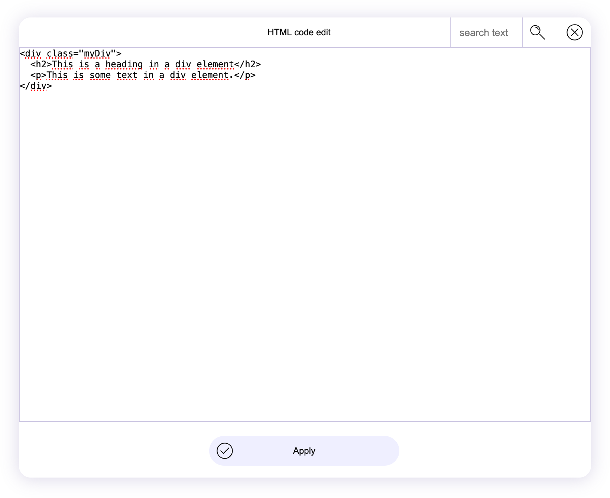
You can add your own HTML markup to the scene and add any element from the HTML.
The HTML layer will be displayed above the text panel inside the "Tuesday" element under the id "tue_html_dialog".
This element can use classes from the CSS file included in the project (they will not be displayed in the editor, but will be visible in the preview) and using the JS files
No autosave
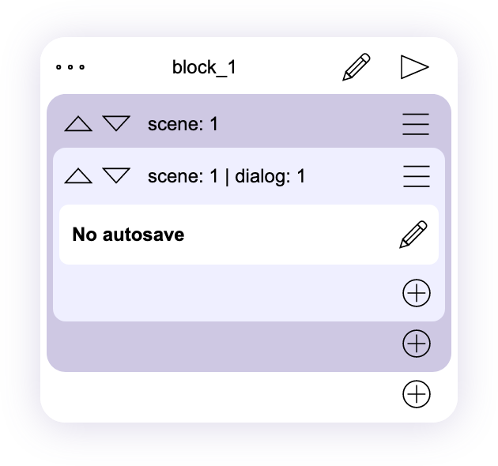
Autosaves will be ignored in dialog or scene. the player will not be able to continue their progress from the specified location, only before or after "No autosave"
This feature may be needed to avoid spoiling the player's progress with non-story scenes such as menu screens or gallery screens.
Hide interface
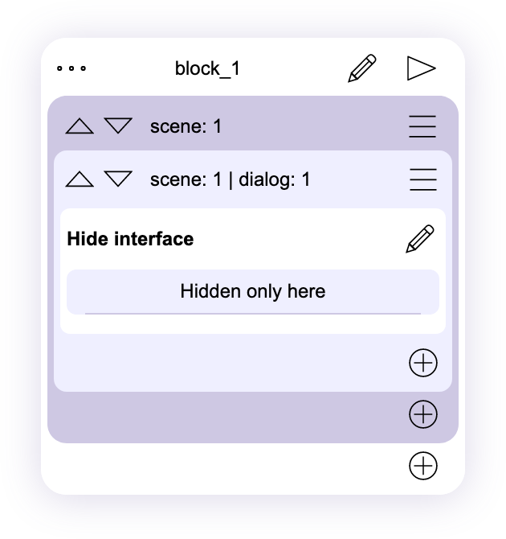
Specifies to hide or show interface buttons in the scene. You can choose to hide buttons only in a specific dialog, or you can specify the dialog where you want to hide the buttons and then the dialog where you want to bring back interface buttons.
This function can be used to hide interface buttons in galleries, videos, or other screens that are not part of the story.
Warning! if you specify to hide the interface from a specific location, then if the user uses "autosave", the interface can still be shown. it is recommended to disable "autosave" in dialogs without interface.
ID event
An element intended for external use in JavaScript. It sends a signal that can be tracked using a JavaScript event handling method.
This way you can link Tuesday JS project to your JavaScript code. so that it can react to the moments of the story that you define.
Go to
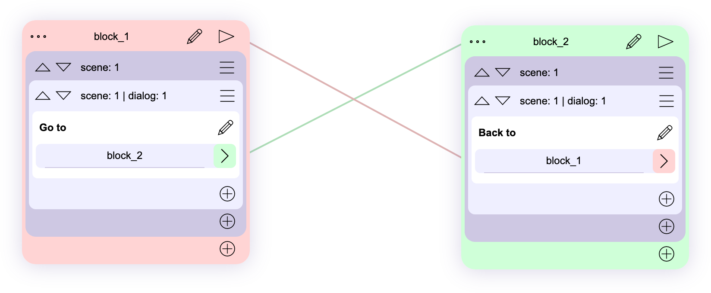
Specifies the block the player will move to after the current dialogue.
Dialog variables
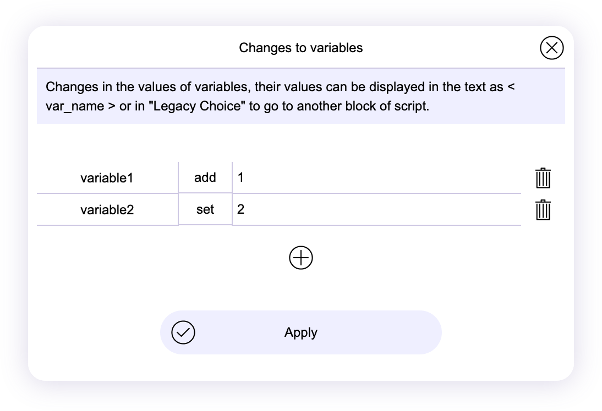
When the dialog is displayed, you can make changes to the values of the variables. you can use two basic operations such as add (add) and change (set), both operations work on both numbers and text.
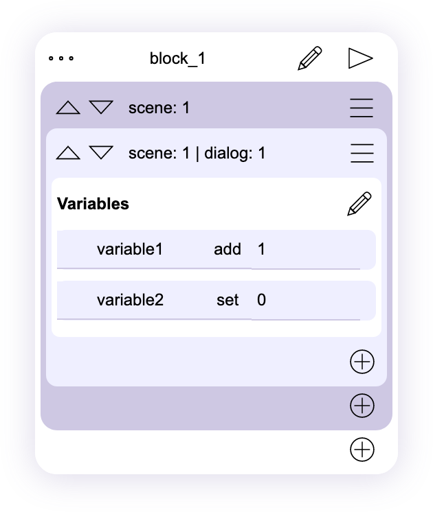
Changes to variables happen before the text is displayed, if you use the displayed value of the variable in the text <var_name> then the changed value will be shown.
Dialog play sound
Specifies the sound file to be played in the dialog. this sound does not loop and will not stop until the recording ends or is interrupted by the "Dialog stop sound" element
An element designed to control the plot by the user, with its help he can move through the plot blocks and control the sequence of the plot.
It can also be part of a decoration or an interactive object. in it you can write text, display images and values from variables
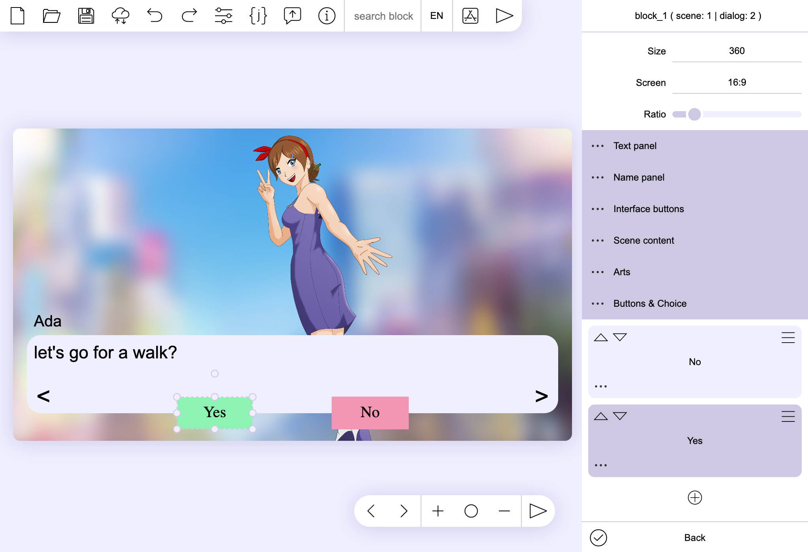
By default, the button is displayed in the middle of the scene. the appearance of each new button is automatically copied from the already created ones.
To arrange the selection buttons in the scene, the Scene Editor is used, which also displays their appearance and size. To quickly add a choice element, you can use the settings window in the Story block.
Individual settings for choice
Go to - Specifies the block of story that the user navigates to, or a system function.
Only text from - Alternative to "Go to". Specifies the block from which only the dialog will be used
Text - button text You can specify individual text for each localization.
Indent text - An indent for text within an element. You can use percentages (%) of pixels (px) and other CSS units and specify only certain padding for each side, just like the standard CSS text padding feature.
Width / Height - Artistic dimensions, default dimensions are 100% relative to "Choice" element. You can use percentages (%) of pixels (px) and other CSS units.
Sound - The sound that will be played when this element is clicked.
JavaScript - You can specify JavaScript to be executed when the element is clicked.
Font size - The font size for the button text. You can use percentages (%) of pixels (px) and other CSS units.
Font family - The name of the font for the text, you can specify the font from the default ones in the browser or from those connected to the project
Align text - text alignment side inside "Choice" element
Position Top / Left / Bottom / Right - coordinates the location of the object relative to the side of the scene. if "Time transform" is used, all values will be translated to the Top / Left position. You can use percentages (%) of pixels (px) and other CSS units.
OffSet X / Y - The offset coordinates of the object's display point relative to itself.
Angle - Values for the angle of inclination or rotation of the object.
Style CSS - You can give an object a unique CSS style
Class Name - You can specify the class from an external CSS file included with the project or for use in JavaScript.
Color - The color for the element's background.
Art - Specifies a file from the working folder for the art, you can set an individual image for each localization. By default, all languages will be set to the image selected when creating the scene.
Size - Image fill options inside the "Choice" element
Width / Height - Dimensions for the image inside the element, the default dimensions are 100% in relation to the "Select" element. You can use percentages (%) of pixels (px) and other CSS units.
Align art - Image alignment side inside "Choice" element
Position Top / Left / Bottom / Right - coordinates the location of the object relative to the side of the scene. if "Time transform" is used, all values will be translated to the Top / Left position. You can use percentages (%) of pixels (px) and other CSS units.
Variables - You can make changes to the values of variables when you click on an element. you can use two basic operations such as add (add) and change (set), both operations work on both numbers and text.
Display conditions - additional setting of conditions for showing or hiding an object in scene relative to the values in the variables. Lessons: Make hidden content
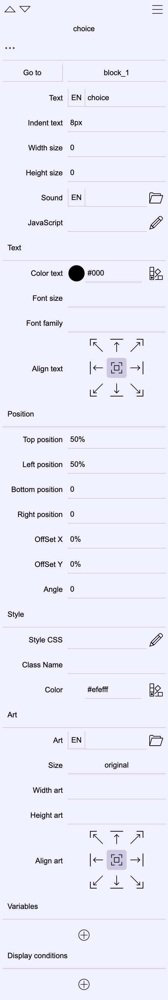
Dialog text add
Identical to "text" element, but does not erase the previous text, but adds new text to the existing one
Warning! The two elements "text" and "add text" cannot be in the same dialog box.
Dialog art
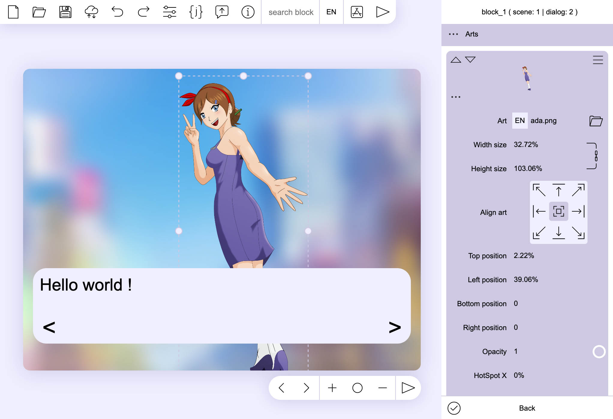
The "Art" element adds additional images to the scene at specified coordinates and sizes. for this, any graphic formats supported by the browser can be used, such as jpg, png, gif, svg and many others.
The scene editor is used to add and edit Art elements. after adding and selecting an image from the working folder in the "Art" section, the image settings panel will appear.
If you change images using drag and drop, then the coordinate and size parameters will be in percentage of the same scene value
Individual settings for art
Art - Specifies a file from the working folder for the art, you can set an individual image for each localization. By default, all languages will be set to the image selected when creating the scene.
Width / Height - Artistic dimensions, default dimensions are 33% relative to the scene. You can use percentages (%) of pixels (px) and other CSS units.
Align art - Image alignment side inside "Art" element
Position Top / Left / Bottom / Right - coordinates the location of the object relative to the side of the scene. if "Time transform" is used, all values will be translated to the Top / Left position. You can use percentages (%) of pixels (px) and other CSS units.
OffSet X / Y - The offset coordinates of the object's display point relative to itself.
Angle - Values for the angle of inclination or rotation of the object.
Time transform - If the value is greater than 0, then the animation function will be activated, the scene dialogs will be used as keyframes for the same objects (using the same file). by specifying the same files in several successive dialogs, you can set the time for their smooth transition from one state to another. for a smooth conversion, take into account all the parameters of the same images, including CSS styles.
Speed transform - Animation styles that determine how the object's acceleration and deceleration will be used during the transformation.
Opacity - Object transparency value
Style CSS - You can give an object a unique CSS style
Class Name - You can specify the class from an external CSS file included with the project or for use in JavaScript.
Display conditions - additional setting of conditions for showing or hiding an object in scene relative to the values in the variables. Lessons: Make hidden content
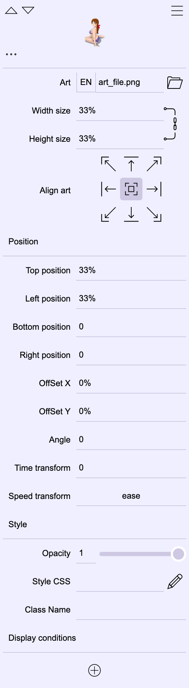
Dialog back to
Specifies the previous block for the current dialog. The player will switch to it if they move backwards in the story.
Dialog timer
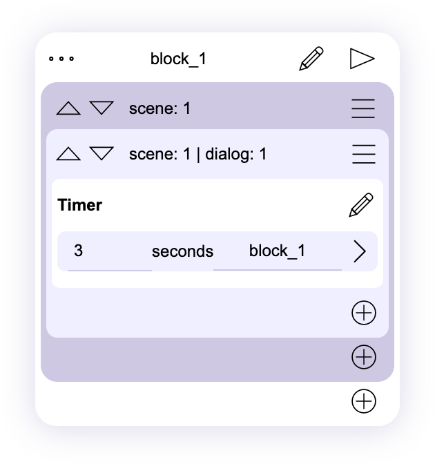
This element will allow you to perform a given action after a certain amount of time specified in seconds.
The available actions are similar to those available in the "choice" element. you can specify the story block switching or transition to the next dialog.
You can use this element for quick time events or for automatic scene switching.
Dialog video
An element that allows you to play a video clip in any browser-accessible format, including .mp4 and .m4a.
You can set basic playback options such as audio volume, autoplay and loop. In addition, you can specify a video fragment to play by specifying the start and end time. Set the action as a transition to another block or dialog at the end of the video or at the end of its fragment.
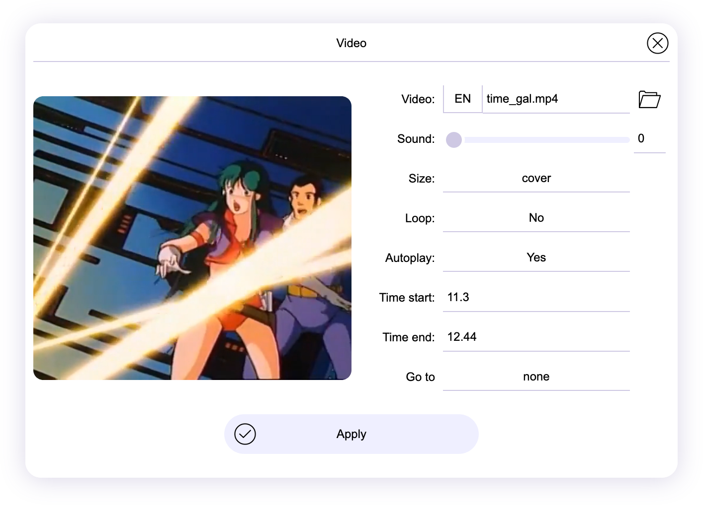
the "size" option will allow you to align the video to the dimensions of the scene, or specify its specific coordinates and size in the scene using the scene editor.
Warning! many browsers block audio playback until user activity, so there may be a situation where the video starts, but there is no sound. Try not to play the video before the user's first click in the project.
Often there is a need to add unlocked content that becomes available to the player as it progresses or for certain actions. To implement this functionality, you can use additional variables and conditions for displaying the element ("show" parameter). You can assign changes to the values of variables on clicking on a select button or on going to a specific dialog, with "show" you assign conditions for displaying an element based on the values in the values of the variables.
First, let's go to the project settings for creating variables.
Step 2
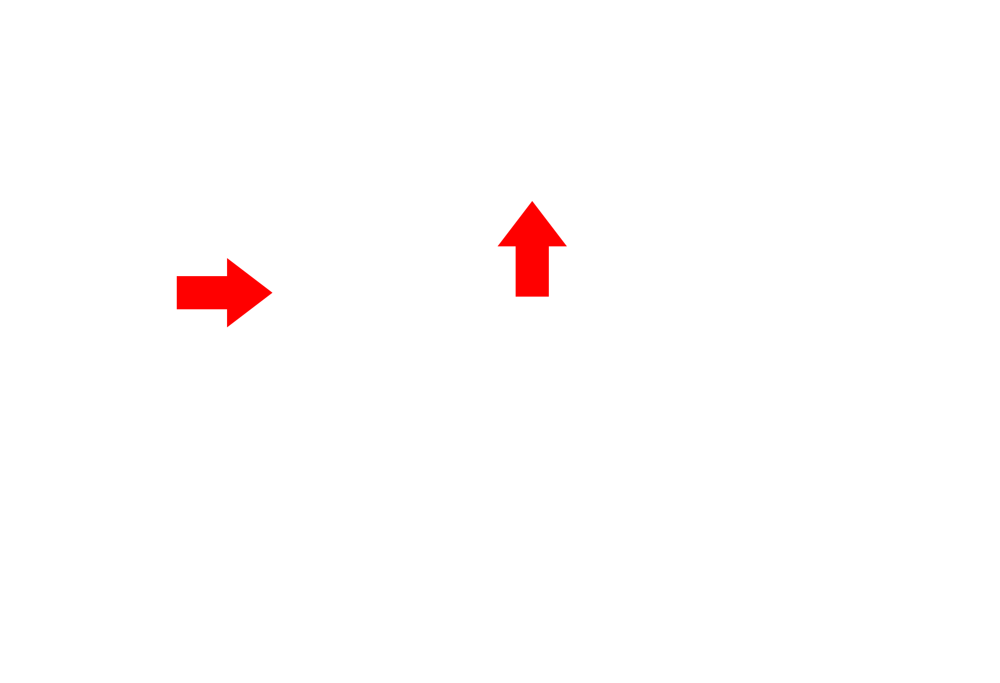
In the window "the project settings" go to the tab "Variables"
Click on the plus (+) and a variable named variable1 will be created in the window, rename it Level and set the default value to 0.
The value of this variable will be used to unlock the content.
Step 3
Let's create a button with a choice, and add to one of the buttons the modification "set" the "Level" variable to the value "1". In the future, this will be used as a condition for displaying the object, if the "Level" value is greater than 0, then it will be displayed.
In this case, clicking on the button with the modifier unblocks the content
In both buttons, set "Go To" option to "Next Scene", the next scene will contain content to unlock.
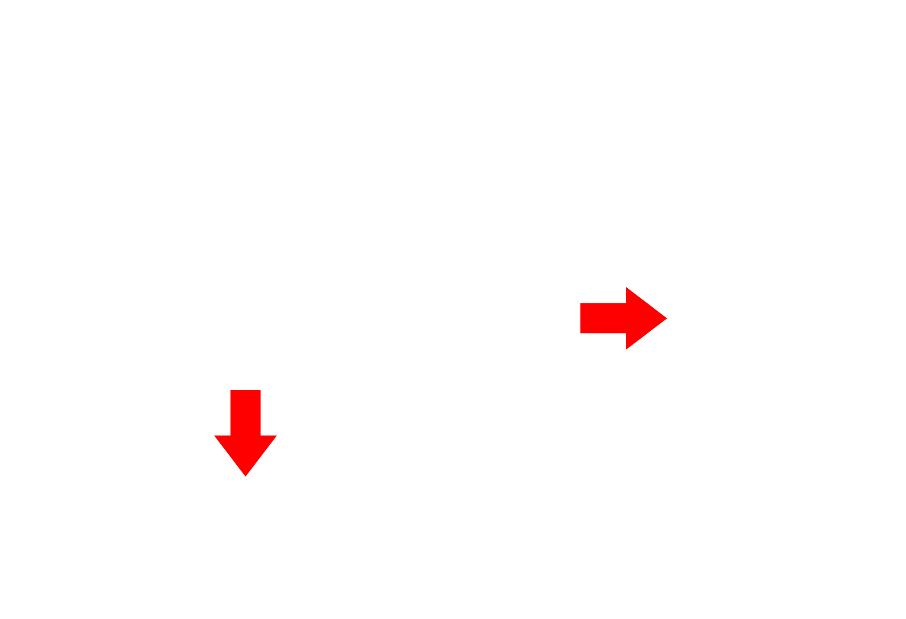
Step 4
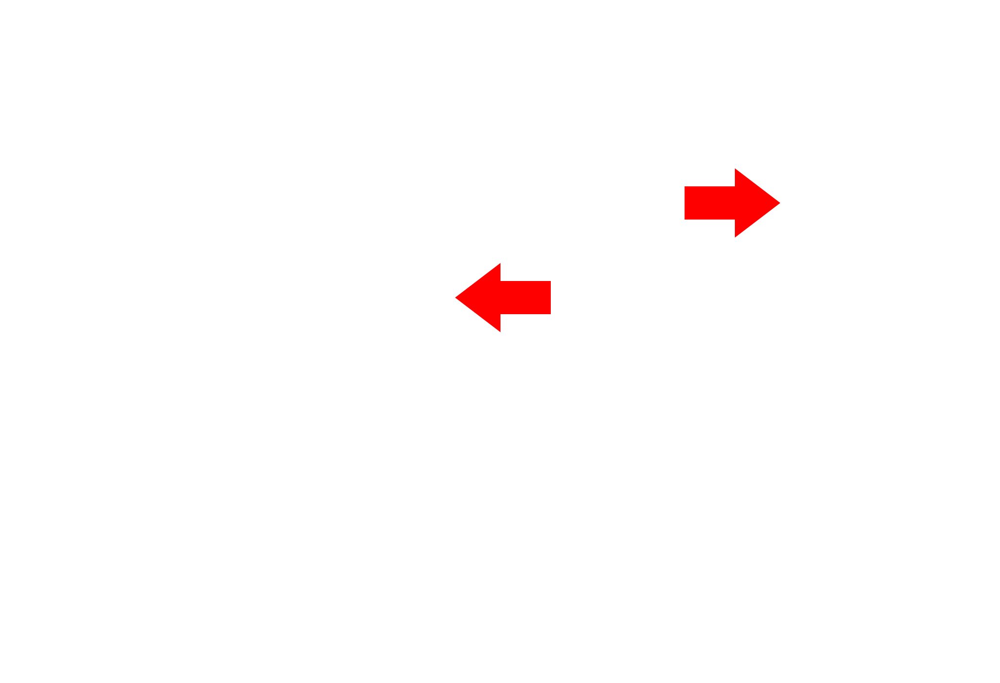
Let's create a new scene or dialog in which we will create two more select buttons
The first one will repeat the dialogue with the unlock offer by restarting the plot block. To do this, in the “go” we set the name of the same block.
The second button will lead to blocked content, so we specify "go to" as "next scene".
Step 5
Finds the "Show" parameter for the button leading to unlocked content, sets the conditions for its display if the value of the "Level" variable is greater than 0.
Now if the user clicks "No", the modifier variable will not be used and the value in the variable "level" will remain at 0, which means that this button will be displayed in the scene.
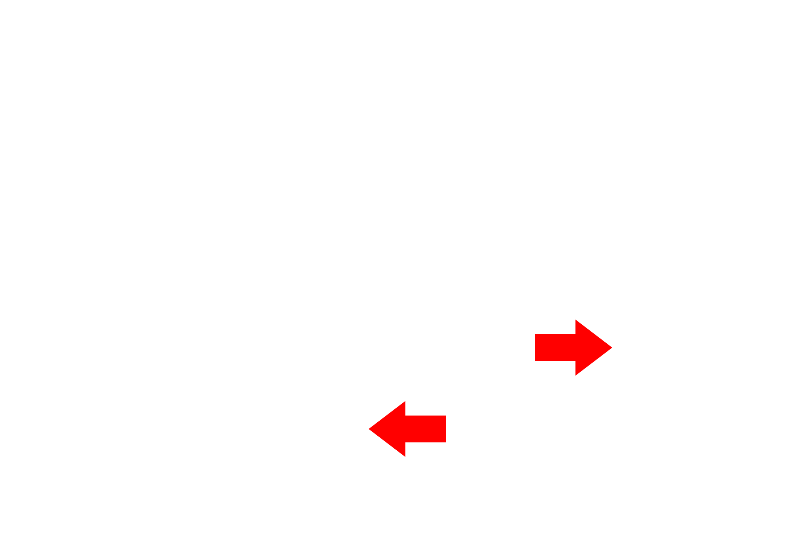
Step 6
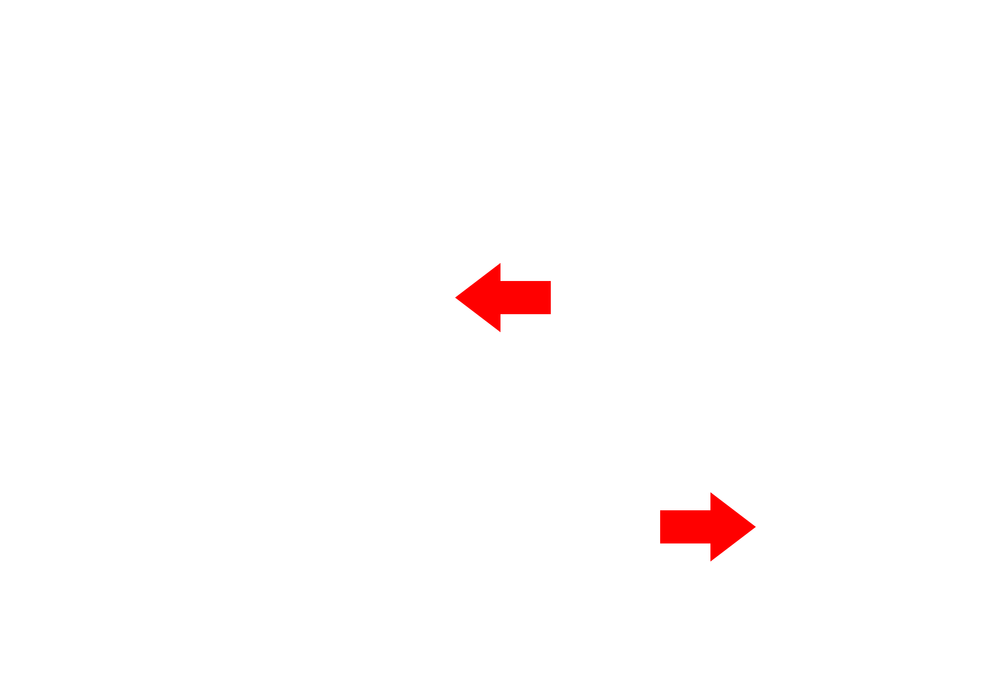
Finds the "Show" option for another select button and sets the conditions for it to be displayed if the value of the "Level" variable is greater than 0. as we showed in the modifier for the "Yes" button
Thus, if the content has already been unlocked, then the offer to repeat the request will not appear, but in its place there will be a button to show cool content.
Step 7
Let's create a new scene where we will display previously locked content, but also make it locked again when the project is restarted. To do this, add the "variables" element to the scene.
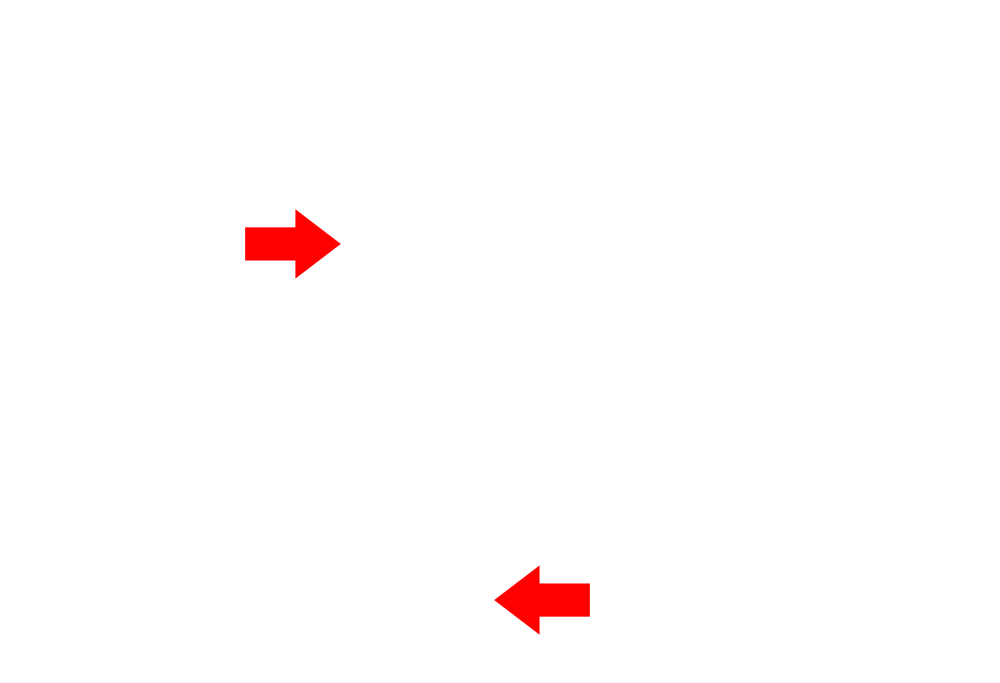
Step 8
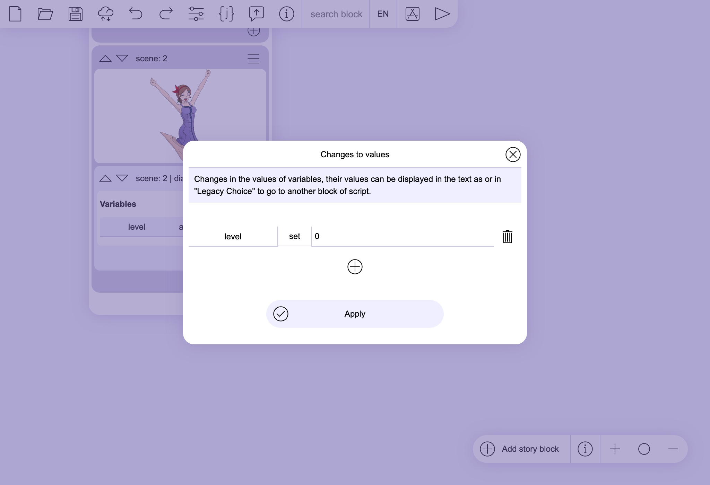
By clicking on (+) we will add the modifier "Lvevl" and set it to "set" and the value 0, as we set earlier the conditions for displaying hidden content, the value in the variable Lvevl is 1 .
In this way, we create conditions for displaying a button that sees hidden content in which the user needs to perform the necessary actions in order to access it. You can use this to reveal hidden answer options to navigate through hidden scenes or unlock art in the gallery. This example shows how the Show option and variables work in general. You can use these options in other ways as well. You don't have to create a variable for every object, you can use one variable for multiple elements and only change the value in the variable itself.
This is a logical element that determines the next story block based on the values in the variables. it will not be visible to the user.
As you progress through the story, you can specify in dialogs or on the selection buttons what changes to make to the variables that you created in the project settings. And then use the obtained values in the Legacy selection to draw a conclusion or decision for the further development of the story.
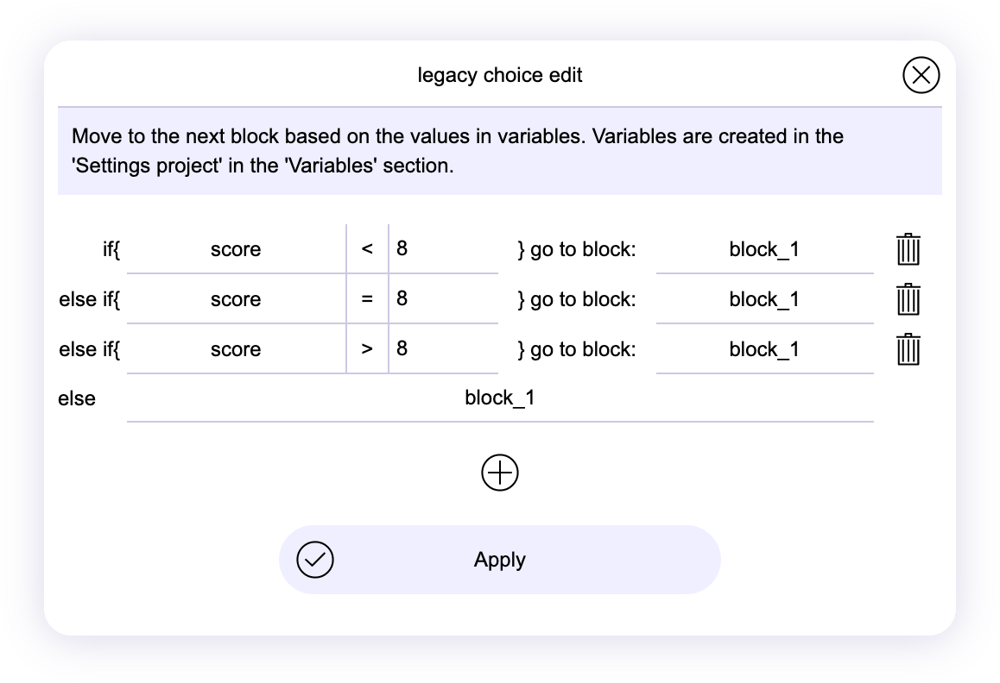
You can set up multiple value checks and their order will be determined by this "if eles" list, with the last "else" value always present, which is triggered if none of the above comparisons matched.
This element is most often used to create tests to test knowledge or to determine the ending of a story.
Terrain map
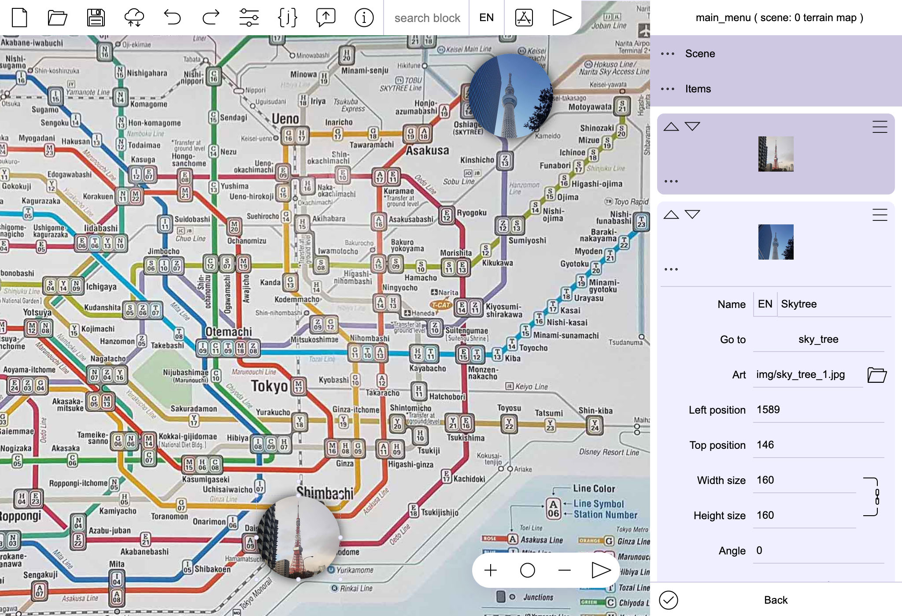
The scene view is intended to display game space maps or other navigation. To use it, you need to select a new image for the map from the working folder and place markers on it that will lead to another plot block or continue the current one. Map scene with all elements will be automatically scaled to the size of the screen or project window, and scrolling functionality will be added.
Individual settings for displaying a scene with a map in a project.
Art - Specifies a file from the working folder for the map background image, you can set an individual image for each localization. By default, all languages will be set to the image selected when creating the scene.
Width / Height - Map dimensions, by default, the dimensions of the image that was selected when creating the scene are used. Resizing does not affect the scaling of the scene, if you want to increase the size of the map, it is recommended to use the "Scale" option
Start scroll X / Y - Sets the initial scroll position when the map is first launched, later the scene remembers the last map scroll position so that the user can continue from the same place.
Size - Options for filling the scene with a map background image.
Scale - Specifies the scale of the map so that it can be enlarged or reduced in proportion to its size and the size of the project window.
Color - Scene background color.
Button sound - The default sound for keyboards, if the marker has its own sound, then this file will not be played.
Music - Specifies the file for the background music, the selected music will be looped, if the file is the same as the background music of the previous scene, the music will not be interrupted or restarted when switching to the card.
Class name - For the scene, you can specify the style class from the CSS file specified in the project settings. It allows you to use additional options for the map that are not provided by the main functionality, such as filters or gradients.
Style CSS - Sets individual CSS style options for the map. It allows you to use additional options that are not provided by the main functionality, such as filters or gradients.
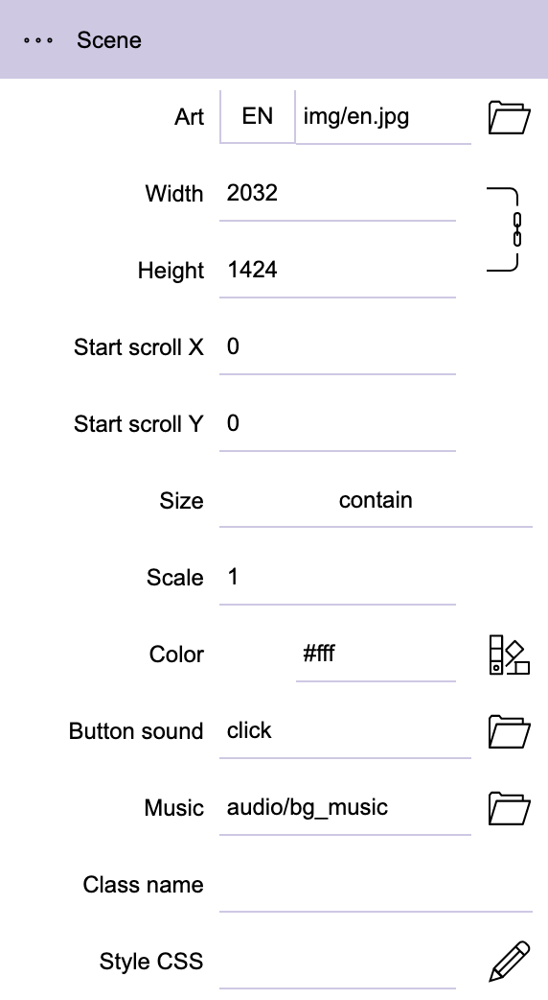
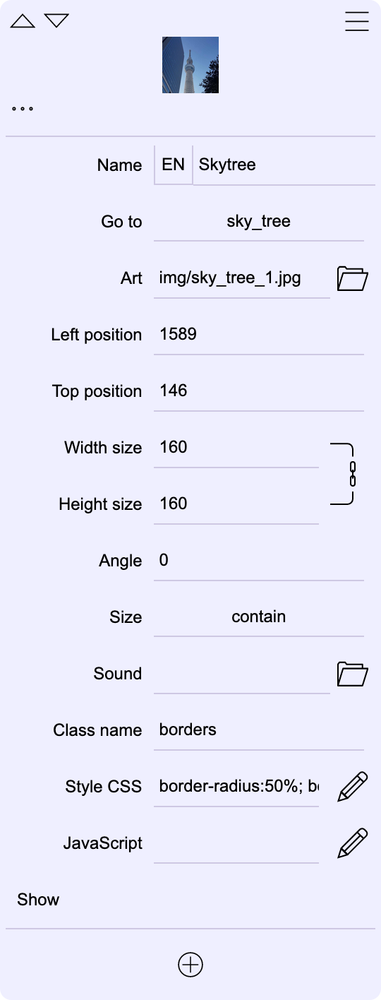
Markers for the map are created in the "items" section, before creation you will be prompted to select an image for the marker, this image will be used by default for all languages.
Name - Adds a text caption for the marker.
Go to - Sets the transition to another story block
Art - An image for the marker selected from the working folder.
Left / Top position - Marker location coordinates on the map in pixels
Width / Height size - Marker sizes, by default, the size of the image that was selected when creating the marker is used.
Angle - Angle or rotation of marker image
Size - Options for filling the scene with a marker image.
Sound - A file from the working folder with the sound that will be played when you click on this marker.
Class name - For the marker, you can specify the style class from the CSS file specified in the project settings. It allows you to use additional options.
Style CSS - Sets individual CSS style options for the marker. Allows you to use additional options
JavaScript - Executes JavaScript after the marker is clicked
Show - Conditions based on variable values under which the marker will be hidden or shown
Hidden object
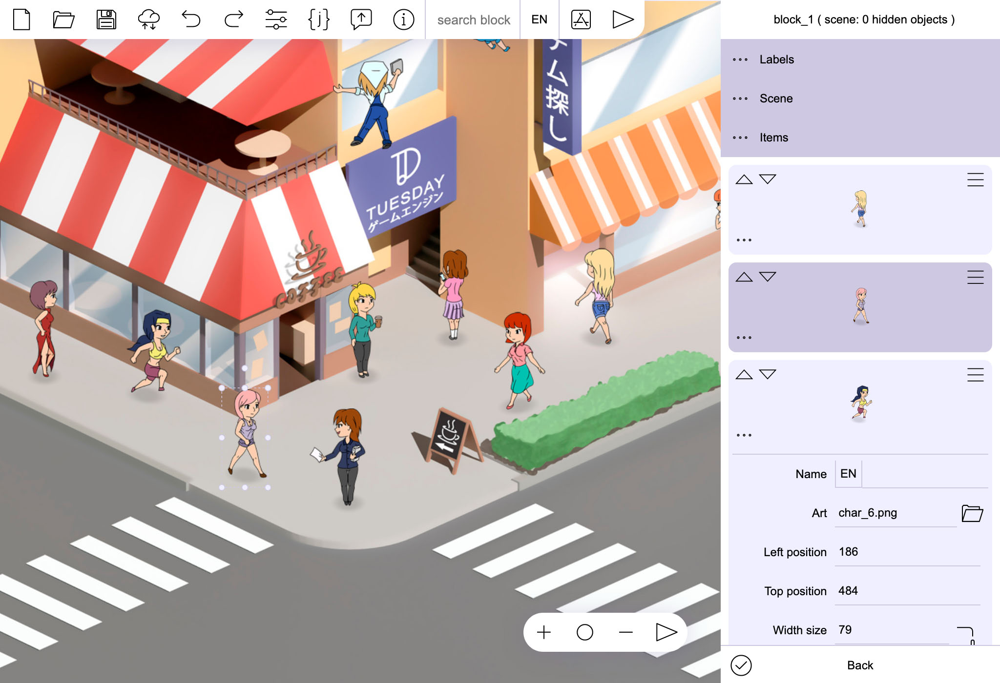
Scene with game mechanics "hidden object" also called "hidden picture" or "hidden object puzzle adventure". The player's task is to find all the items from the list on the playing field.
This game scene displays a list of items for search in a text panel from the main interface. You can specify the number of items to search in the "Labels" scene parameters section, if there are fewer items in the scene than specified in the parameter, then the random entry of the item into the list is not applied, if more is specified, then the list will be determined randomly each time. The more elements in the scene, the more diverse the list will be created.
Settings for displaying item label in the search list
Width / Height - item label dimensions in text panel
Items for search - Number of items in the search list, if there are fewer items in the scene than specified in the parameter, then the random entry of the item into the list is not applied, if more is specified, then the list will be determined randomly each time.
Style CSS - Sets individual CSS style options for the item label. It allows you to use additional options that are not provided by the main functionality, such as filters or gradients.
Removable label - Removes the label of the found element from the search list
Removable item - Removes the found item from the search list from the playing field
Default color label - The background color of the item label of an element not yet found
Find color label - Found item label background color
Tip label - item label appearance (text only, image only, text with image)
Align text - Align text with element name inside item label
Default color text - The text color of an element not yet found
Find color text - Found item text color
Width / Height art - Item label sizes in the search item list
Fill art - Item label image filling options.
Align art - Image alignment inside item label.
Sound - The default sound to play when an item from the list has been found, if the item has its own sound, then this file will not be played.
Default class name - The style class from the CSS file specified in the project settings for the label of the not yet found element.
Find class name - Style class from the CSS file specified in the project settings for the label of the found element.
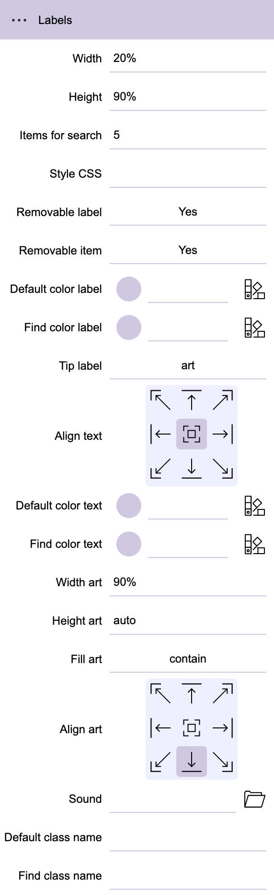
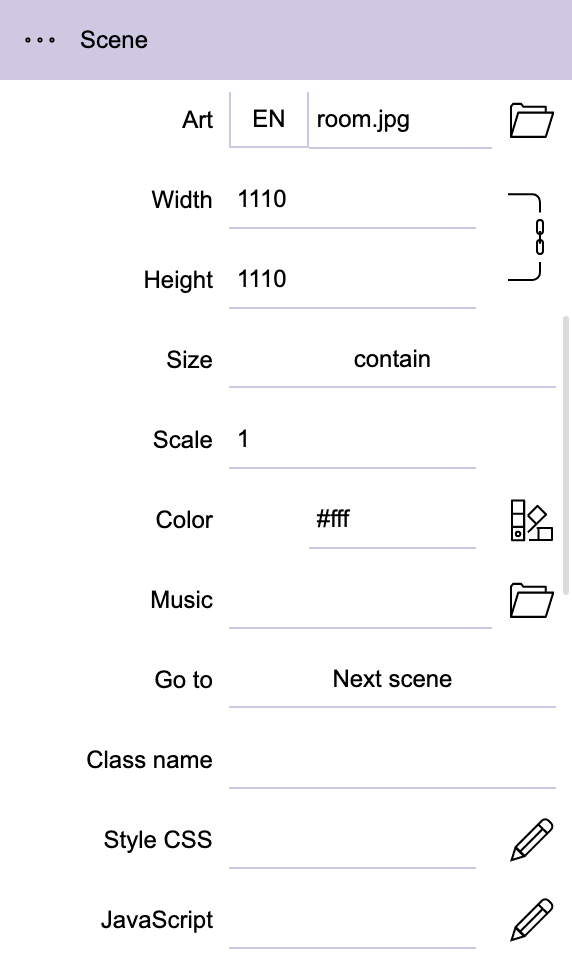
Individual settings for displaying a scene.
Art - Specifies a file from the working folder for the playing field background image, you can set an individual image for each localization. By default, all languages will be set to the image selected when creating the scene.
Width / Height - the dimensions of the playing field, by default, the dimensions of the image that was selected when creating the scene are used. Resizing does not affect the scaling of the scene, if you want to increase the size of the scene, it is recommended to use the "Scale" option
Size - Options for filling the scene with a map background image.
Scale - Specifies the scale of the playing field so that it can be enlarged or reduced in proportion to its size and the size of the project window.
Color - Scene background color.
Music - Specifies the file for the background music, the selected music will be looped, if the file is the same as the background music of the previous scene, the music will not be interrupted or restarted when switching to the card.
Go to - Specifies the next block or dialog that the player will move to after all items in the list have been found.
Class name - For the scene, you can specify the style class from the CSS file specified in the project settings. It allows you to use additional options for the map that are not provided by the main functionality, such as filters or gradients.
Style CSS - Sets individual CSS style options for the playing field. It allows you to use additional options that are not provided by the main functionality, such as filters or gradients.
JavaScript - Executes JavaScript at the beginning of the game scene
Placement of an object on the playing field.
Name - Adds a text caption for the item. which will be displayed in the list of items to search.
Art - An image for the item selected from the working folder.
Left / Top position - Item location coordinates on the map in pixels
Width / Height size - Item sizes, by default, the size of the image that was selected when creating the item is used.
Angle - Angle or rotation of item image
Size - Options for displaying the image of the item.
Sound - A file from the working folder with a sound that will be played when this item is clicked, if it is in the search list.
Class name - For the item, you can specify the style class from the CSS file specified in the project settings. It allows you to use additional options.
Style CSS - Sets individual CSS style options for the item. Allows you to use additional options
JavaScript - Executes JavaScript after the item is clicked
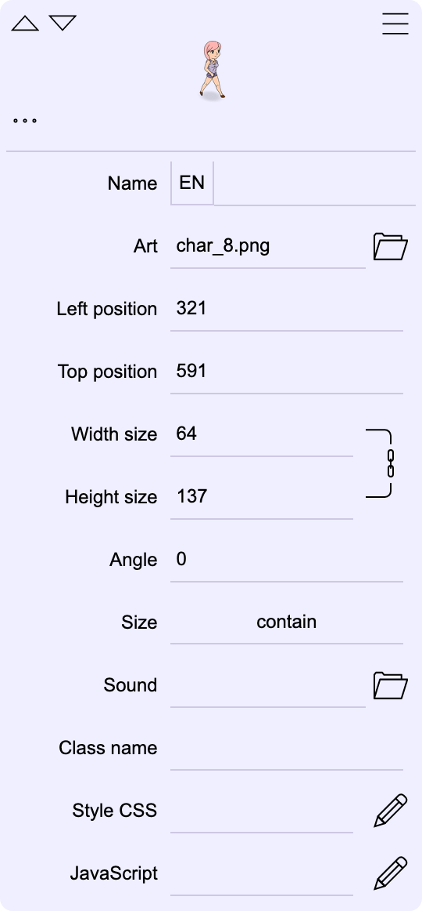
Dialog
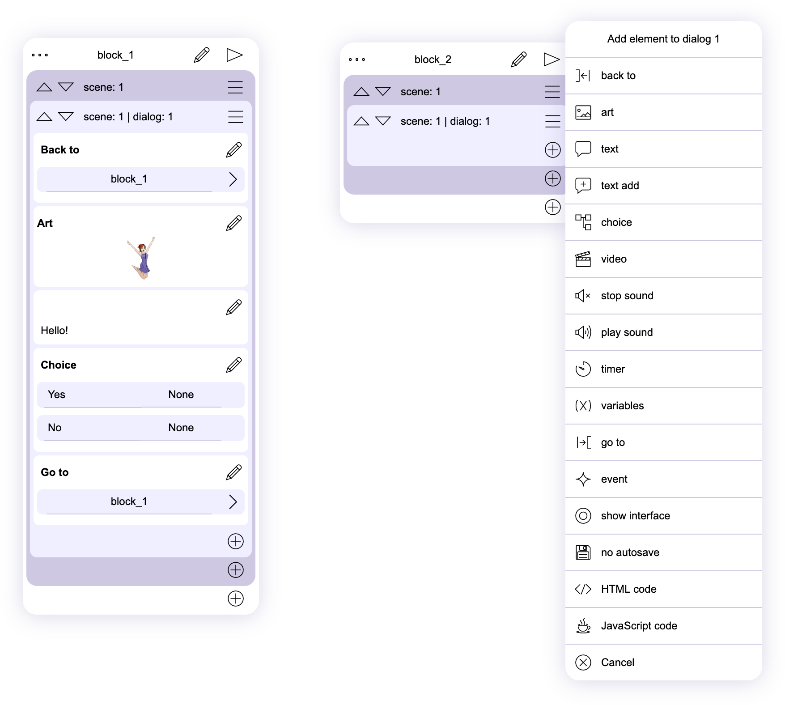
The dialog defines all other elements that will be displayed in the project, such as dialog text, character images, select buttons, additional sounds, and more. To edit the layout, it is recommended to use the "Scene Editor" with the Drag end Drop visual interface, it can be called in the context menu of the dialog or when adding the "art" element. Options and elements in a dialog are used only in that dialog and are not carried over to the next dialog.
Scene
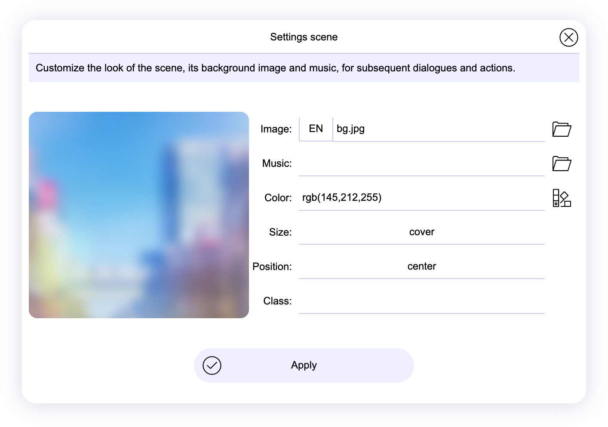
The scene is part of the story block, which sets the basic parameters for subsequent dialogues, such as background image, color, and music.
Image - File for the background image that will be displayed in all subsequent dialogue of this scene (analogue of background-image in CSS). You can set a separate file for each translation, if you specify only one file and leave the rest empty, that single file will be used for all translations. For this, any graphic formats supported by the browser can be used, such as jpg, png, gif, svg and many others
Music - Specifies a file for background music, the selected music will be looped, if you specify the same file in several scenes in a row, then the music will not be interrupted or restarted when switching to a scene. If you leave the parameter empty, then the previously started music will be stopped. Playback cannot be affected by the "Play Sound" and "Stop Sound" dialog items, the sounds they control play in parallel with the background music.
Color - Scene background color (analogue of background-color in CSS).
Size - Options for filling a window or screen with a background image (analogue of background-size in CSS).
Position - property sets the starting position of a background image to align it in the scene relative to the size of the window or screen (analogue of background-position in CSS). For example, by specifying the lower right corner, the image will be stretched relative to this corner, and at any size, the lower right corner of the image will be visible.
Class - For the scene, you can specify the style class from the CSS file specified in the project settings. It allows you to use additional scene parameters that are not provided by the main functionality, like filters or gradients.
Story block
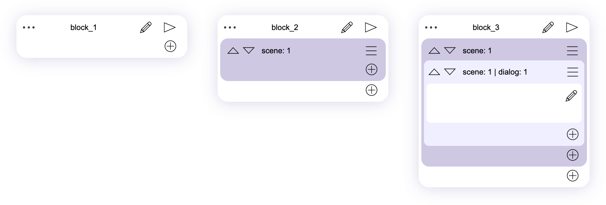
The script structure is divided into various elements. The main element is a "block" that is part of a narrative or a storyline, and their sequence will be determined by the user's choices. Blocks consist of scenes with a set of graphic and sound elements. And already inside the scene, a sequence of dialogues and other elements.
Build project
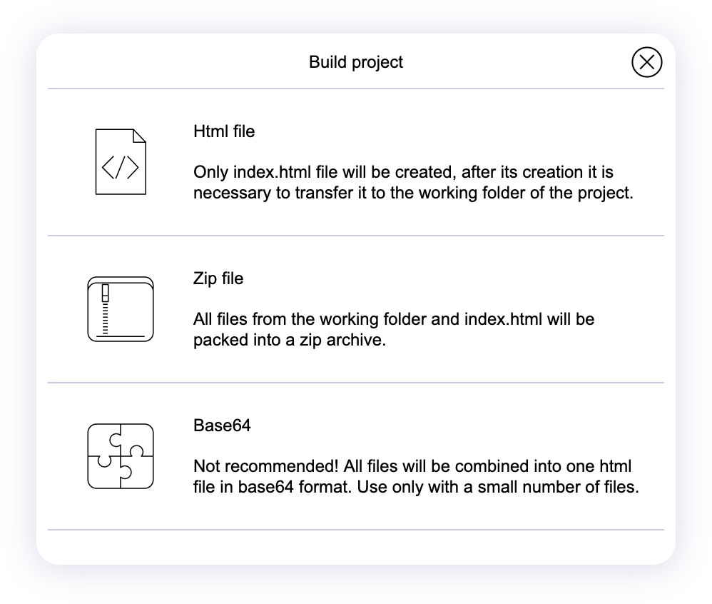
Building the final project into an executable file. All build options include an HTML file with an embedded RunTime and a JSON array of the project with all dialogs and options.
Html file - The fastest build option, only the index.html file will be created, without adding files from the working folder, only the paths to the files relative to the working folder will be indicated. The resulting file can be launched in the browser even without additional files, if you add it to the working folder and run, the files specified in the project will be used. It is recommended to use if the project does not use additional files.
Zip file - Creates an uncompressed archive with the index.html file (to start the project) and other files used in the project, if the file from the working folder is not specified in the project, then it will not be added to the archive. You can publish the resulting ZIP archive to most browser game distribution services. It is recommended to be used by default, and this option is suitable for most use cases and distribution of the project. To create a ZIP archive, JSZip is used, which has good compatibility with various systems. .
Base64 - Only index.html is created with all the data in one file. All files used in the project from the working folder are encoded in Base64 format and added to the generated index.html, if the file from the working folder is not specified in the project, then it will not be added to index.html. Important! when encoding files in Base64, the data size increases by about 25%. Some browsers may have problems using HTML over 30MB. Therefore, this export is not recommended for large projects with a lot of data.
Add story block
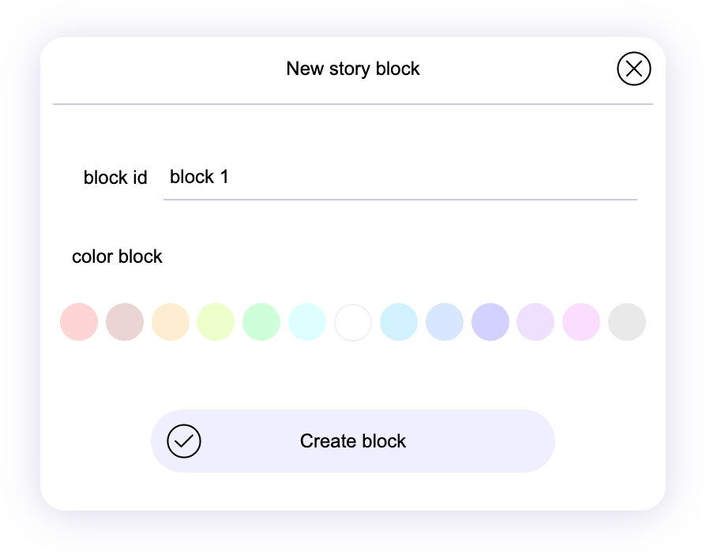
The story in "Tuesday JS" consists of story blocks that contain scenes and dialogues of a certain part of the story. With blocks, you separate parts of the plot to create a non-linear narrative.
The first created story block in the project is automatically added as the starting block from which the project will be launched. You can specify another start block in the project settings, the main interface will not be displayed in the specified block (in the first scene), so you can make the main menu or start screen.
The block name is indicated only in Latin letters and without the use of special characters. this name will not be displayed in the project, but will be used in the project structure, in fact, you set the name (key) for the data array, which will contain all subsequent data of this part of the story.
For ease of navigation, you can set the color of the block. this color will be used by all elements that will refer to this block (selection buttons, lines, etc.)
In the future, you can change the name and color of the block by clicking on the edit button in the header of the selected block.
Um guia rápido para criar uma visual novel com Tuesday JS
Crie um novo projeto clicando no ícone do arquivo no canto superior esquerdo.
Passo 2: Configurando um novo projeto
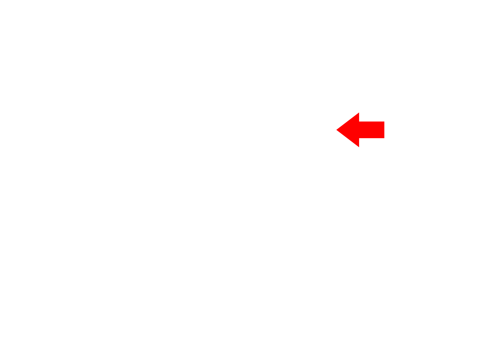
Na janela que é aberta, especifique a pasta de trabalho com os recursos para o projeto.
Atenção! O projeto não é salvo automaticamente no seu dispositivo ou na memória do seu navegador, quando você precisar realizar uma cópia para backup do projeto, utilize a função de Salvar (Passo 32: Salvando o projeto).
Para abrir o projeto, você também precisa especificar a pasta de trabalho, não o arquivo JSON. O JSON não contém os arquivos do projetos da pasta de trabalho, apenas os caminhos para elas relacionados à pasta de trabalho. Entretanto, é importante que o JSON do projeto esteja localizado dentro da pasta de trabalho do projeto.
Passo 3: Localização Disponível
Indica o nome do projeto e os idiomas disponíveis.
Para cada idioma, você pode imediatamente especificar o nome do projeto traduzido.
O primeiro idioma adicionado será setado como o idioma padrão da novela. Se o dispositivo do jogador não suportar nenhum dos idiomas especificados, o jogo irá trocar a linguagem para o primeiro idioma da lista.
Após a criação do projeto, você pode remover e adicionar traduções nas configurações do projeto.
Clique em "Criar Projeto" / "Create project".
Passo 4: Adicione um bloco de história
Agora nós podemos proceder para a criação de um bloco de história clicando no botão "Adicionar bloco de história" / "Add story block" no canto inferior direito.
Uma história em Tuesday JS é constituída de blocos de história os quais o leitor pode alternar ao longo do progresso da história, utilizando as escolhas ou suas consequências.
Passo 5: Configurando um bloco de história
Nós configuramos o nome do bloco em letras do Latin e a cor do bloco como desejamos.
O jogador não verá esses nomes ou cores, eles são necessários para praticidade quando navegando pelo enredo.
Clique em "Criar bloco" / "Create block".
O primeiro bloco de história criado será considerado por padrão como o bloco inicial. Se necessário, você pode modificar posteriormente nas configurações do projeto.
Passo 6: Adicionar Cena
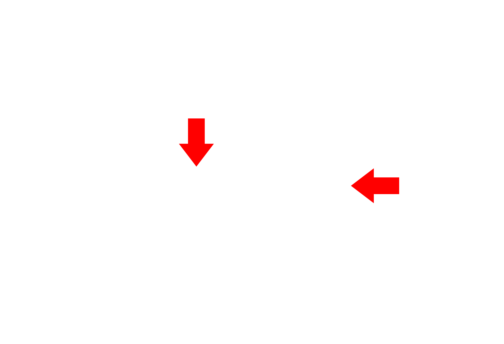
Abra o bloco de história criado clicando no três pontos ao lado esquerdo.
Clique em (+) para chamar o menu de elementos.
E adicione um novo elemento de cena para o bloco de história no menu de pop-up.
Passo 7: Plano de Fundo da Cena
Na janela de opções de cena que é mostrada, configure a imagem de fundo clicando no ícone de pasta.
Aqui você também pode escolher seu próprio plano de fundo para outras traduções. Se você configurar apenas um plano de fundo, será automaticamente aplicado para todas as traduções.
Passo 8
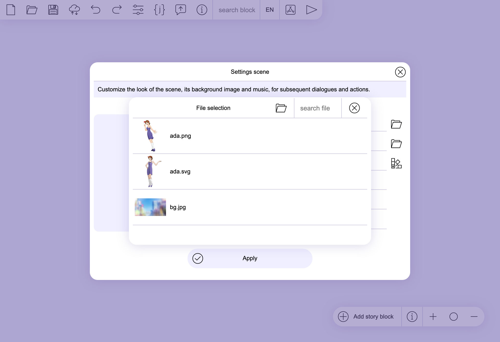
A caixa de diálogo mostrada apresenta todos os arquivos da pasta de trabalho, dentro dela selecione o arquivo desejado para o plano de fundo.
Passo 9
Opcionalmente, você pode especificar as opções de visualização do plano de fundo, cor de plano de fundo, e a música de fundo para a cena.
Clique em "Aplicar" / "Apply" e você verá a cena aparecer no bloco de história.
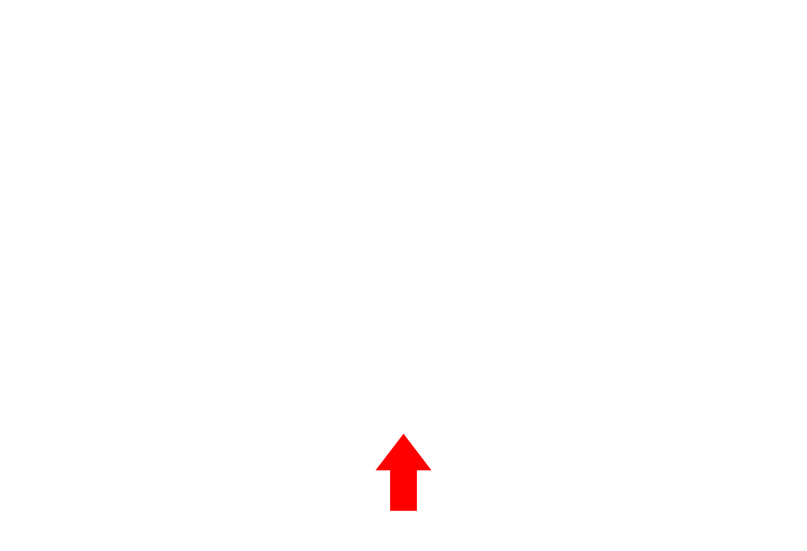
Passo 10: Adicionar Diálogo
Agora você precisa adicionar um elemento de diálogo para a história. Clique no botão (+) superior e selecione "Adicionar Diálogo" / "Add dialog".
Blocos de história consistem em cenas contendo os diálogos com todos os elementos como texto, gráficos e escolhas.
Passo 11: Executar o editor de cena
No item mostrado, selecione o botão de menu e clique em "Editar de Cena" / "Scene edit".
Passo 12: Menu Principal
Agora nós estamos no editor de cena. Como o primeiro bloco de história criado automaticamente torna-se o inicial, você pode criar um menu inicial nele. O bloco inicial pode ser trocado nas configurações do projeto.
Abaixo de "Botões e Escolhas" / "Buttons & Choice", clique em (+).
Passo 13: Botões e Escolhas
Um botão é apresentado no esquema.
E um painel com seus parâmetros é apresentado no menu à direita.
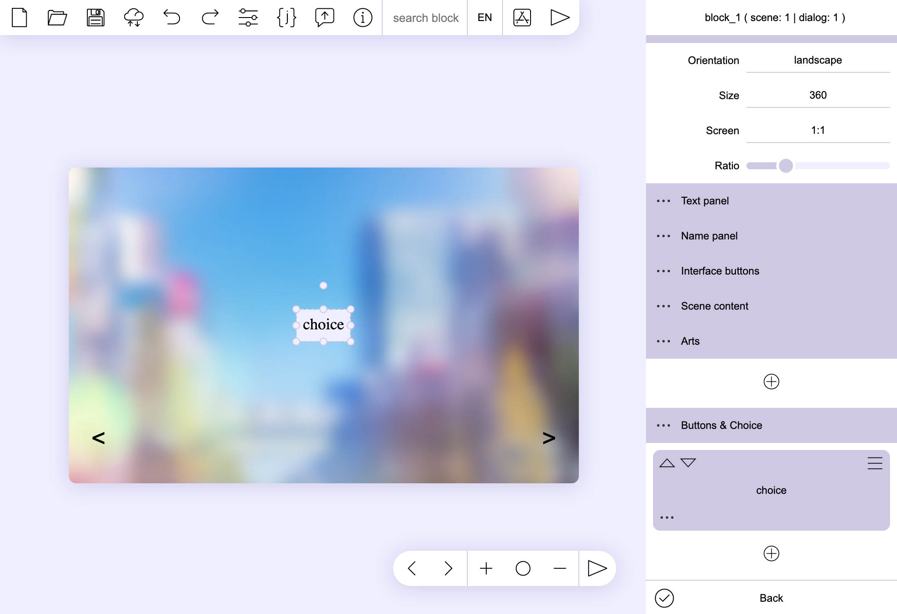
Passo 14
Para o botão, sete o parâmetro "ir para" / "go to" com o valor "Próxima cena" / "Next scene".
O que significa que quando você clicá-lo, a história irá continuar no bloco de história atual.
Após isso, selecione o botão de "Voltar" / "Back" para retornar ao roteiro.
Passo 15: Adicionar Diálogo de Texto
Adicione outro diálogo para a cena clicando em (+) e selecionando o elemento de "texto" / "text".
Passo 16: Configuração de Texto
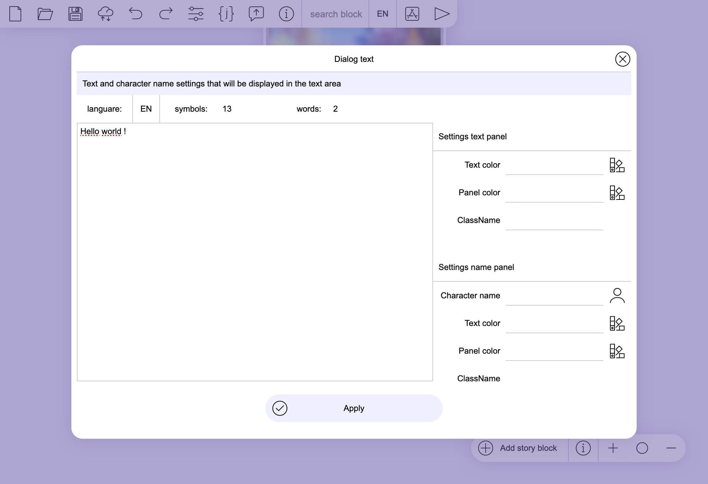
Uma janela será mostrada com opções para o diálogo. Nela você pode instalar frases para todos os idiomas disponíveis.
A área de texto tanto no editor quanto na novela já criado não será apresentada se não houver texto especificado, então o texto deve ser especificado para todas as traduções.
Se a tradução do texto difere no número de frases, você pode escrever "skip", assim a frase será automaticamente ignorada. Se o nome da variável é utilizada com símbolos de maior e menor, então o diálogo mostrará o conteúdo dessa variável "texto <nome_varivel> texto".
Passo 17
Agora você consegue ver como toda a interface se parece.
Clique no menu dessa caixa de diálogo e escolha "Editor de Cena" / "Scene edit".
Passo 18: Visualização da Interface
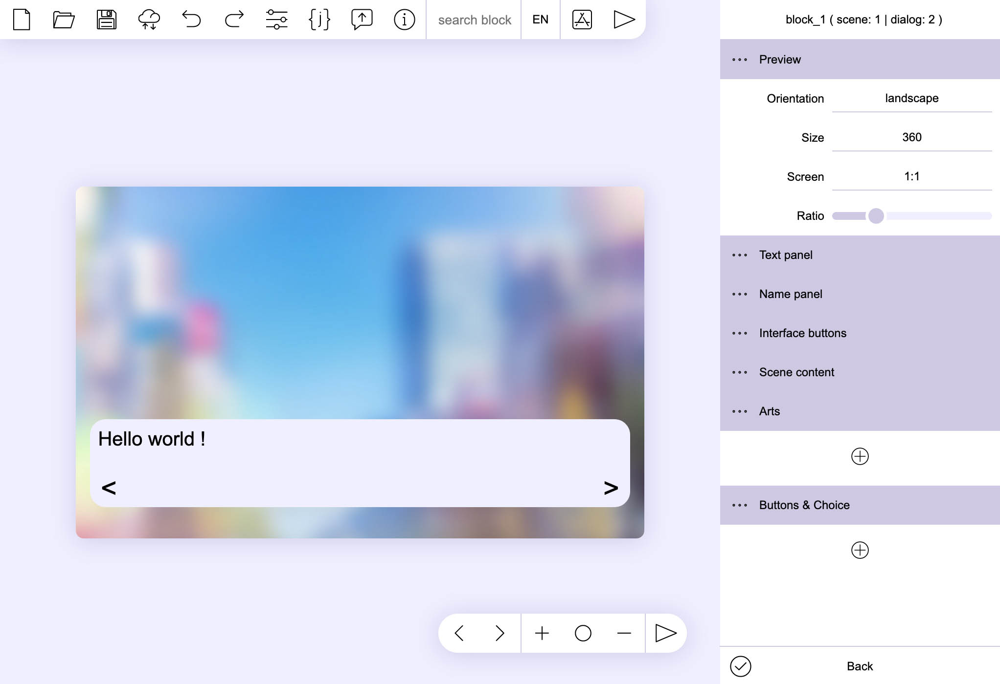
Na seção "Painel de texto" / "Text panel" você pode customizar as áreas de texto para mostrar os diálogos.
Na seção "Botões da Interface" / "Interface buttons" adicione novos botões para a interface e suas aparências.
Adicionalmente, nas configurações dos elementos, você pode utilizar imagens rasteirizadas e gráficos vetorizados, bem como estilos CSS.
Passo 19: Adicionar Personagem (Sprite)
Agora adicione a imagem do personagem na cena,
Encontre o item "Artes" / "Arts" e pressione (+).
Passo 20
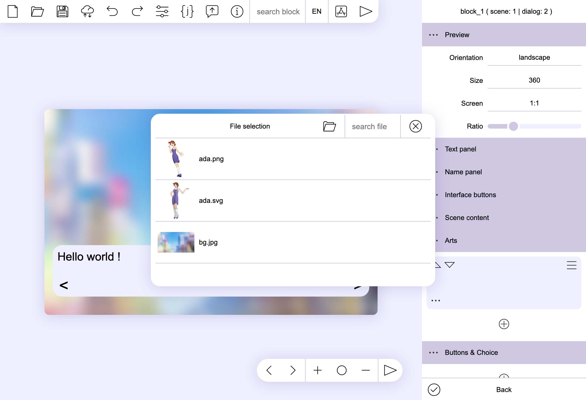
Na janela que é aberta, selecione a imagem desejada da pasta de trabalho.
Passo 21
Nós posicionamos o elemento na cena e configuramos seus parâmetros do mesmo jeito que fazemos com os botões.
E não esqueça da localização.
Passo 22: Duplicar elemento
Nós criamos a seleção de elementos para o futuro desenvolvimento da história.
Para fazer isso, no menu do último item de diálogo, selecione o item "Duplicar" / "Duplicate", para não precisar colocar as imagens novamente.
Passo 23
No diálogo copiado, selecione "Editor de Cena" / "Scene edit"
Passo 24
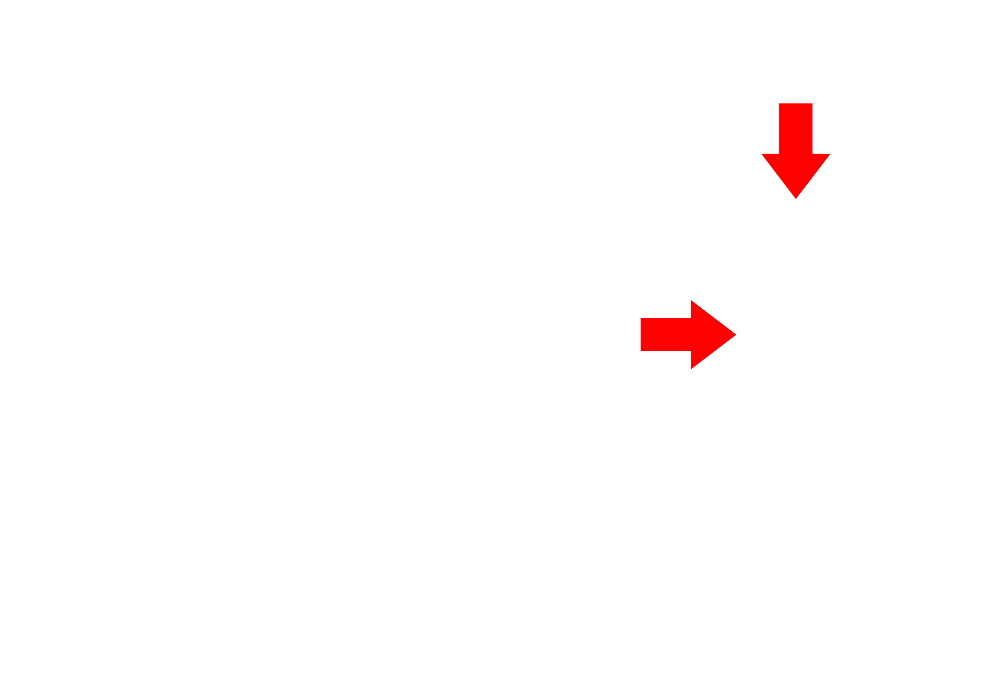
Na seção de Conteúdo da Cena clique em "Editar texto" / "Text edit" e coloque um novo texto para o diálogo,
Passo 25: Nome do Personagem
Dessa vez nós setaremos o nome do personagem na seção de Painel de Nomes das Configurações;
A tradução do nome é colocada junto com o texto.
Tuesday JS lembra de todos os nomes novos, junto com a tradução e seus parâmetros. então você pode posteriormente selecioná-los na lista de personagens. A lista de personagens é editada nas configurações do projeto.
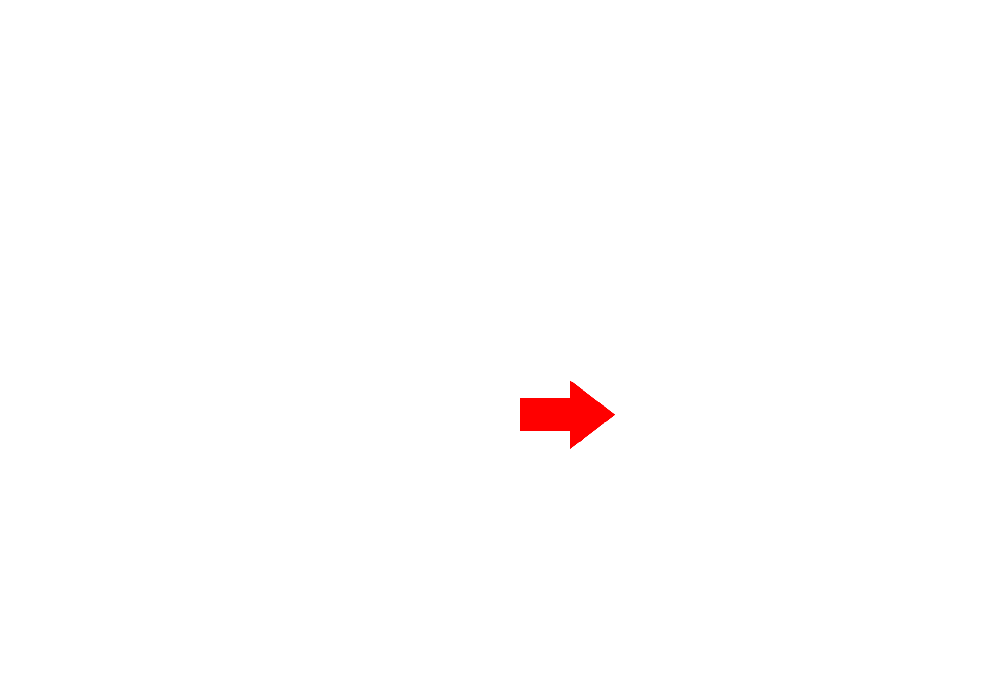
Passo 26: Painel de Nomes
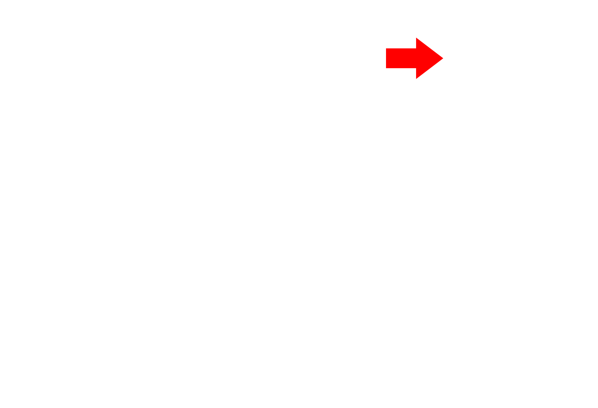
Agora podemos ver que o nome do personagem apareceu na cena,
Assim como no painel de texto, o "painel de nomes" / "Name panel" não aparece se o nome não for especificado.
Você mudar modificar a aparência e posição desse elemento no "painel de nomes" / "Name panel". Você também pode utilizar imagens rasteirizadas e gráficos vetorizados, bem como estilos CSS nessas configurações.
Passo 27: Escolhas
Logo após, adicione botões de seleção da mesma forma como na criação de um menu. Na seção "Botões e Escolhas" / "Buttons & Choice".
Em um dos botões sete o valor "ir para" / "go to" para "Próxima cena" / "Next scene".
E volte para o roteiro.
Passo 28
Na cena, adicione outro diálogo para a escolha com o valor "Próxima Cena" / "Next scene".
Passo 29
Agora nós criaremos um novo bloco de história para o desenvovimento de uma história alternativa e adicionar uma cena e uma imagem de personagem para ele. (Seguindo os mesmos passos dos parágrafos anteriores)
Passo 30: Relacionando blocos do enredo
Para o segundo botão, insira o valor com o nome do novo bloco de história.
Agora nós vemos no roteiro uma linha levando do botão de seleção para o outro bloco de história.
Passo 31: Prévia
Para ter certeza que tudo está feito corretamente, abrimos o projeto utilizando a prévia.
Você pode executar o projeto com qualquer uma das traduções criadas e de qualquer lugar da história.
Passo 32: Salvando o Projeto
O salvamento do projeto é feito de diferentes maneiras em diferentes plataformas.
Navegadores A maioria dos navegadores salva arquivos por padrão na pasta de Download. Para reabrir o projeto, você precisa mover o arquivo JSON do projeto para a pasta de trabalho.
Área de Trabalho Dá a escolha de salvar o projeto JSON na pasta desejada.
Android Salva o JSON para a pasta de trabalho do projeto.
Passo 33: Abrindo o Projeto
Para abrir o projeto você precisa especificar a pasta de trabalho na qual o arquivo JSON está localizado. Sem um arquivo JSON especificado, não será mostrado na lista de arquivos disponíveis.
Se existir múltiplos arquivos JSON na pasta, Tuesday JS irá perguntar qual arquivo você deseja abrir.
Passo 34: Construir o Projeto
Clique no botão de "Construir" / "Build project" no menu superior e selecione a opção desejada na janela apresentada (arquivo zip é recomendado).
Salvar um projeto compilado é similar à salvar um projeto, dependendo da plataforma que você está utilizando.
Você pode publicar o arquivo zip gerado ou base64 e HTML em portais de jogos:
Создайте новый проект, нажав на значок файла в левом верхнем углу.
Шаг 2: Процесс создания нового проекта
В появившемся окне укажите рабочую папку с ресурсами проекта.
Внимание! Проект не сохраняется автоматически в памяти вашего устройства или браузера, если вам нужно сделать резервную копию проекта, используйте функцию Сохранения (Шаг 32: Сохранение проекта).
Чтобы открыть проект, вам необходимо указать рабочую папку, а не файл JSON
JSON не содержит файлов проекта из рабочей папки, только пути к ним относительно рабочей папки. Поэтому важно, чтобы JSON проекта находился в рабочей папке проекта.
Шаг 3: Локализация
Укажите название проекта и доступные языки.
Для каждого языка вы можете сразу указать переведенное название проекта.
1-й добавленный язык будет установлен в качестве языка по умолчанию. Если устройство игрока не поддерживает ни один из указанных языков, игра переключится на первый язык в этом списке.
После создания проекта вы можете удалять и добавлять локализации в настройках проекта.
Нажмите на кнопку "Create Project".
Шаг 4: Добавьте сюжетный блок
Теперь мы можем приступить к созданию сюжетного блока, нажав на кнопку "Add story block" в правом нижнем углу.
История в Tuesday JS состоит из сюжетных блоков, читатель может переключаться между блоками по мере прохождения истории, используя варианты выбора или их последствия.
Шаг 5: Настройка сюжетного блока
Задайте название блока латинскими буквами и цвет блока по желанию.
Игрок не увидит это название или цвет, они нужны для вашего удобства при навигации по сюжету.
Нажмите "Create Block".
Первый созданный блок сюжета по умолчанию будет считаться начальным блоком. При необходимости вы можете изменить его в настройках проекта.
Шаг 6: Добавление сцены
Откройте созданный блок истории, нажав на три точки с левой стороны.
Нажмите (+) для вызова меню элементов.
И добавьте из появившемся меню элемент scene.
Шаг 7: Фон сцены
В появившемся окне "Settings scene" установите фоновое изображение, щелкнув на значок папки.
Здесь вы также можете выбрать альтернативные фоны для других локализаций.
Если вы установите только один фон, он будет автоматически применен ко всем локализациям.
Шаг 8
В появившемся диалоговом окне отображаются все соответствующие файлы из рабочей папки проекта, в нем выберите нужный файл для фона.
Шаг 9
При желании вы можете указать параметры отображения фона, цвет фона и фоновую музыку для этой сцены.
Нажмите “Apply”, и вы увидите, как сцена появится в сюжетном блоке.
Шаг 10: Добавление диалога
Теперь вам нужно добавить в него элемент диалога. Нажмите кнопку (+) и выберите "Add Dialog".
Сюжетные блоки состоят из сцен, содержащих диалоги со всеми элементами, такими как текст, графика и варианты выбора.
Шаг 11: Запуск редактирования сцены
Нажмите кнопку "Меню сцены" и выберите пункт Edit Scene.
Шаг 12: Главное меню
Теперь мы находимся в редакторе сцен. Поскольку первый созданный сюжетный блок автоматически становится начальным, вы можете создать в нем главное меню. Стартовый блок можно изменить в настройках проекта.
В разделе "Buttons & Choices" нажмите (+).
Шаг 13: Кнопки и варианты выбора
На макете появилась кнопка.
И в правом меню появилась панель с его настройками.
Шаг 14
Для кнопки установите параметр "go to", значение "Next scene".
Это означает, что когда вы нажмете на нее, история продолжится в текущем сюжетном блоке.
После, нажамите кнопку "Back" и вернитесь к сюжетным блокам.
Шаг 15: Добавление текста диалога
Добавьте еще один диалог на сцену, нажав (+) и выбрав элемент "text".
Шаг 16: Настройка текста
Появится окно с настройками диалога. В нем вы можете задать фразы для всех доступных локализаций.
Текстовая область не будет отображаться, если текст не указан.
Если тексты перевода отличаются количеством фраз, то вы можете написать “skip" тогда фраза будет автоматически пропущена.
Если имя переменной написать в угловых скобках, то в диалоговом окне будет показано значение из этой переменной "текст <var_name> текст".
Шаг 17
Теперь мы можем посмотерть, как выглядит весь интерфейс.
Перейдите в меню этого диалогового окна и выберите "Scene edit".
Шаг 18: Создание интерфейса
В разделе "Text panel" вы можете настроить внешний вид и функцианал текстовой области.
В разделе "interface buttons" добавьте новые кнопки интерфейса и настройте их внешний вид.
Кроме того, в настройках всех элементов можно использовать растровую и векторную графику, а также стили CSS.
Шаг 19: Добавление спрайта
Теперь добавьте спрайт на сцену,
Найдите пункт "Arts" и нажмите (+).
Шаг 20
В появившемся окне выберите нужный спрайт из рабочей папки.
Шаг 21
Располагаем спрайт на сцене и задаем его параметры аналогично как и с кнопками.
И не забывайте о локализации.
Шаг 22: Дублирование элементов
Создание дубликата выбранной сцены созданно для более быстрого создания истории.
Для этого в контекстном меню последнего диалога, выберите пункт "Duplicate", чтобы не создавать все элементы заново.
Шаг 23
В контексном меню скопированной сцены выберите "Scene edit".
Шаг 24
В разделе "Scene Content" нажмите "Edit Text" и задайте новый текст для диалога.
Шаг 25: Имя персонажа
Теперь мы задать имя персонажа в разделе "Name Panel".
Локализация имени устанавливается вместе с текстом.
Tuesday JS запоминает все новые имена вместе со всеми вариантами перевода и другими параметрами, чтобы в дальнейшем вы могли выбрать их из списка персонажей. Список персонажей редактируется в настройках проекта.
Шаг 26: Панель имен
Теперь мы видим, что имя персонажа появилось на сцене,
Как и с текстовой панелью, "Name panel" не отображается, если имя не указано.
Вы можете изменить внешний вид и положение этого элемента в разделе "Name panel". В этих настройках вы также можете использовать растровую и векторную графику, а также стили CSS.
Шаг 27: Выбор
Затем добавьте кнопки выбора таким же образом, как и при создании меню. В разделе "Buttons & Choice".
На одну из кнопок устанавливаем значение "go to" на "Next scene".
И возвращаемся к сценарию.
Шаг 28
Добавьте на сцену еще один диалог для кнопки выбора со значением "Next scene".
Шаг 29
Далее создадим новый сюжетный блок для создания альтернативной истории и добавим в него сцену и диалог со спрайтом. (Следуя тем же шагам, что и в предыдущих пунктах)
Шаг 30: Связь между сюжетными блоками
Для второй кнопки установите значение с названием нового сюжетного блока.
Теперь мы видим в сценарии линию, ведущую от кнопки выбора к другому сюжетному блоку.
Шаг 31: Предварительный просмотр
Чтобы убедиться, что все сделано правильно, запускаем проект используюя предварительный просмотр.
Вы можете запустить проект с любой из созданных локализаций и с любого места истории.
Шаг 32: Сохрание проекта
Сохранение проекта работает по-разному на разных платформах.
Браузеры: Большинство браузеров сохраняют файлы по умолчанию в папку загрузки. Чтобы повторно открыть проект, вам необходимо переместить созданный файл JSON проекта в рабочую папку.
Компьютер: Предоставляет выбор, в какой папке сохранить JSON проекта.
Андроид: Сохраняет JSON в рабочую папку проекта.
Шаг 33: Открытие проекта
Чтобы открыть проект, вам необходимо выбрать Рабочую папку, в которой находится файл JSON. Не файл JSON, он не будет отображаться в списке доступных файлов.
Если в папке несколько файлов JSON, Tuesday JS спросит, какой файл вы хотите открыть.
Шаг 34: Сборка проекта
Нажмите на кнопку "Build" в верхнем меню и выберите нужный вариант в появившемся окне (рекомендуется использовать zip-архив).
Сохранение собранного проекта аналогично сохранению проекта, в зависимости от используемой платформы.
Вы можете опубликовать полученный zip-архив или base64 на многих игровых порталах как:
A quick guide to create a visual novel with Tuesday JS
Step 1 : Create a New project
Create a new project by clicking on the file icon in the upper left corner.
Step 2 : Setting up a new project
In the window that appears, specify the working folder with the resources for the project.
Attention! The project is not automatically saved to your device or browser memory, when you need to make a backup copy of the project, use the Save function (Step 32 : Save project).
To open the project, you also need to specify the working folder, not the JSON file The JSON does not contain the project files from the working folder, only the paths to them relative to the working folder. Therefore, it is important that the project's JSON is located in project's working folder.
Step 3 : Available localization
Indicate the project name and available languages.
For each language, you can immediately specify the translated name of the project
The 1st added language will be set as default language of the novel. If the player's device does not support any of the specified languages, the game will switch to the first language in this list
After creating a project, you can remove and add translations in the project settings.
Click on "Create Project". More information in the section "New project"
Step 4 : Add story block
Now we can proceed to create a story block by clicking on the "Add story block" button in the lower right corner.
A story in Tuesday JS is made up of story block that the reader can switch between as they progress through the story, using choices or their consequences.
Step 5 : Setting up a story block
We set the block name in Latin letters and the block color as desired.
The player will not see these names or colors, they are needed for your convenience when navigating through the plot.
Click "Create Block".
The first created story block will be considered the start block by default. if necessary, you can change it in the project settings.
Step 6 : Add scene
Open the created story block by clicking on the three dots on the left side
Click (+) for call the menu of elements
And add a new scene element to the story block in the pop-up menu.
Step 7 : Scene background
In "Settings scene" window that appears, set the background image by clicking the folder icon.
Here you can also choose your own background for other translations. If you set only one background, it will be automatically applied to all translations.
Step 8
The dialog box that appears displays all matching files from the project's working folder, in it select the desired file for the background.
Step 9
Optionally, you can specify background display options, background color, and background music for this scene.
Click “Apply” and you will see the scene appear in the story block.
Step 10 : Add Dialog
Now you need to add a dialog element to it. Click the top (+) button and select "Add Dialog".
Story blocks consist of scenes containing dialogues with all the elements such as text, graphics, and choices.
Step 11 : Launch scene edit
In the item that appears, press the menu button and click "Scene edit".
Step 12 : Main menu
Now we are in the scene editor. Since the first created story block automatically becomes the starting one, you can create a main menu in it. The starting block can be changed in the project settings.
Under "Buttons & Choices", click (+)
Step 13 : Buttons & Choices
A button appeared in the layout
And a panel with its parameters appeared in the right menu.
Step 14
For the button, set the "go to" parameter to the value "Next scene"
Which means that when you click on it, the story will continue in the current story block.
After pressing "Back" button to return to the script.
Step 15 : add dialogue text
Add another dialog to the scene by clicking (+) and selecting the "text" element
Step 16 : Text setting
A window will appear with options for the dialog. In it you can install phrases for all available languages.
The text area both in the editor and in the already created novel will not be displayed if no text is specified, so the text must be specified for all translations.
If the translation texts differ in the number of phrases, then you can write “skip”, then the phrase will be automatically skipped. if the variable name is used in angle brackets, then the dialog will show the volume from this variable "text <var_name> text".
Step 17
Now we can see how the entire interface looks.
Click the menu of this dialog box and choose "Scene edit".
Step 18 : Creating a user interface
In the section "Text panel" you can customize the appearance and functionality of the text area.
In the section "interface buttons" add new buttons for the interface and their appearance.
In addition, in the settings of all elements, you can use raster and vector graphics, as well as CSS styles.
Step 19 : Add sprite
Now add the sprite to the scene,
Find the "Arts" item and press (+)
Step 20
In the window that appears, select the desired sprite from the working folder.
Step 21
Positioning the sprite in the scene in the scene and set its parameters in the same way as with the buttons.
And do not forget about localization.
Step 22 : Duplicate element
Create a duplicate of the selected scene.
To do this, in the context menu of the last dialog, select the "Duplicate" item so as not to create all the elements again.
Step 23
From the context menu of the copied scene, select "Scene edit"
Step 24
In the Scene Content section click on "Edit Text" and set a new text for the dialog,
Step 25 : Character name
This time we will set the character name in the Settings Name Panel section.
The name translation is set together with the text.
Tuesday JS remembers all new names, along with translations and parameters, so that you can later select it from a list of characters. The list of characters is edited in the project settings
Step 26 : Name panel
Now we can see that the character's name has appeared in the scene,
Just like in the text panel, the "name panel" does not appear if the name is not specified.
You can change the appearance and position of this element in the "Name panel". You can also use raster and vector graphics, as well as CSS styles in these settings.
Step 27 : Сhoice
Then add select buttons in the same way as when creating a menu. In the section "Buttons & Choice".
One of the buttons sets the value "go to" to "Next scene".
And back to the script.
Step 28
In the scene, add another dialog for choice with the value "Next scene"
Step 29
Next, we will create a new story block for the development of an alternative story, and add a scene and dialogue with the sprite to it. (Following the same steps of previous paragraphs)
Step 30 : Linking plot blocks
For the second button, set the value with the name of the new story block.
Now we see in the script a line leading from the select button to another story block.
Step 31 : Preview
To make sure that everything is done correctly, we launch the project using the preview.
You can start a project with any of the created translations and from any place in the story
Step 32 : Save project
Saving a project is handled differently on different platforms.
Browsers Most browsers save files by default in the Download folder. To reopen the project, you need to move the json file of the project to the working folder.
Desktop Provides a choice in which folder to save the JSON project.
Android Saves JSON to the project's Working folder.
Step 33 : Open project
To open the project, you need to specify the Working Folder where the json file is located. Not a JSON file, to be specified, it will not be displayed in the list of available files
If there are multiple JSON files in the folder, Tuesday JS will ask which file you want to open.
Step 34 : Build project
Click on the "Build" button in the top menu and select the desired option in the window that appears (zip archive is recommended).
Saving a built project is similar to saving a project, depending on the platform you are using.
You can publish the resulting zip archive or base64 html on game portals:
Una guía rápida para crear una novela visual con Tuesday JS
I'm Suki, a translator (English-Spanish) from Ecuador, if you need help with translation for your project just contact me sending a message: sukinovels@gmail.com.
Crea un nuevo proyecto dando clic en el icono de archivo en la esquina superior izquierda.
Paso 2: Ajustar un nuevo proyecto
En la ventana que aparece, especifica la carpeta de trabajo con los recursos para el proyecto.
¡Atención! El proyecto no es automáticamente guardado en tu dispositivo o memoria del navegador, cuando necesites realizar una copia de seguridad del proyecto, usa la Función Guardar (Paso 32: Guardar Proyecto)
Para abrir el proyecto, también necesitas especificar la carpeta de trabajo, no el archivo JSON. El JSON no contiene los archivos del proyecto de la carpeta de trabajo, solo las rutas para lo relacionado con la carpeta de trabajo. Por lo tanto, es importante que los proyectos de JSON estén localizados en carpetas de trabajo del proyecto.
Paso 3: Seleccionar Idiomas Disponibles
Muestra el nombre del proyecto y los idiomas disponibles.
Para cada idioma, inmediatamente puedes especificar el nombre traducido del proyecto.
El primer idioma agregado será ajustado como lengua por defecto de la novela. Si el dispositivo del jugador no tiene soporte en alguno de los idiomas especificados, el juego lo cambiará al primer lenguaje en esta lista.
Después de crear un proyecto, puedes remover y agregar traducciones en los ajustes del proyecto.
Clic en "Create Project".
Paso 4: Agregar un bloque de historia
Ahora podemos proceder a crear un bloque de historia dando clic en el botón "Add story block" en la esquina inferior derecha.
Una historia en Tuesday es construida a través de bloques que el lector puede cambiar entre estos, como su progreso a través de la misma, usando las elecciones o sus consecuencias.
Paso 5: Ajustar un Bloque de Historia
Ajustamos el nombre del bloque en letras latinas y el color del bloque deseado.
El jugador no verá los nombres o colores, estos son requeridos para su conveniencia cuando navegues a traves de la trama del juego.
Click en "Create Block"
El primer bloque de historia creado será considerado el bloque de inicio por defecto, de ser necesario, puedes cambiarlo en los ajustes del proyecto.
Paso 6: Agregar escena
Abre el bloque de historia creado dando click en los tres puntos del lado izquierdo.
Clic en (+) para abrir el menu de elementos.
Y agrega un nuevo elemento a la escena del bloque de historia en el menú emergente.
Paso 7: Colocar escena de Fondo
En la ventana de opciones de la escena que aparece, ajusta la imagen de fondo dando clic en el icono de la carpeta.
Aquí puedes escoger tu propio fondo para otras traducciones. Si ajustas solo un fondo, automáticamente será aplicado para todos los idiomas.
Paso 8
El cuadro de diálogo que aparece muestra todos los archivos correspondientes desde la carpeta de trabajo del proyecto, en él seleccione el archivo deseado para el fondo.
Paso 9
De manera opcional, puedes especificar las opciones de visualización, color de fondo, y musica de fondo para esta escena.
Clic en “Apply” y verás que la escena aparece en la historia de bloque.
Paso 10: Agregar Diálogo
Ahora necesitas agregar un elemento de diálogo en él.
Clic en el boton superior (+) y selecciona "Add Dialog".
Los bloques de historia consisten en escenas que contienen diálogos, con todos los elementos como texto, gráficas y elecciones."
Paso 11: Iniciar la escena de edición
En el elemento que aparece, presiona el botón del menú y hacer clic en "Edit Scene"
Paso 12: Menu Principal
Ahora estamos en el editor de escena. Desde el primer bloque de historia creado, automáticamente se convierte en el primero que inicia, puedes crear un menu principal en él. El bloque de inicio puede ser cambiado en los ajustes del proyecto.
Abajo de "Buttons & Choices", clic en (+)
Paso 13: Botones & Elecciones
Un botón apareció en de escena.
Y un panel con sus parámetros aparecieron en el menú de la derecha.
Paso 14
Para el botón, colocar el "go to" parámetro al valor "Next scene"
Lo cual significa que cuando das clic en él, la historia continuará en el bloque de historia actual.
Después presionar el botón "Back", para volver al guión.
Paso 15: Agregar diálogo de texto
Agrega otro diálogo a la escena dando clic en (+) y seleccionando el elemento "text".
Paso 16: Ajustar el texto.
Una ventana aparecerá con opciones para el diálogo. En él puedes instalar frases para todos los lenguajes disponibles.
El área de texto en el editor y en la ya creada novela no se mostrará si el texto no es especificado, así que el texto debe ser especficado para todas las traducciones.
Si la traducción del texto difiere en el numero de frases, entonces tu puedes escribir “skip”, entonces la frase será automáticamente omitida.
Si el nombre de la variable es usado en corchetes, entonces el diálogo mostrará el volumen de su variable "text <var_name> text".
Paso 17
Ahora que podemos ver como luce toda la interfaz.
Clic en el menú de este cuadro de diálogo y escoge "Scene edit"
Paso 18: Vista de la Interfaz
En la sección "Text panel" puedes personalizar las areas de texto para mostrar los diálogos.
En la sección "interface buttons" agrega nuevos botones para la interfaz y su apariencia.
En adición, en los ajustes de todos los lementos, tu puedes usar imagenes rasterizadas (imágenes en pixeles) y gráficos vectorizados, así también estilos CSS.
Paso 19: Agregar Personajes (Srpites)
Ahora agrega la imagen del personaje a la escena,
Encuentra el elemento de "Arts" y presiona (+)
Paso 20
En la ventana que aparece, selecciona el sprite (imagen del personaje) deseado de la carpeta de trabajo.
Paso 21
"Colocamos el elemento en la escena y ajusta sus parámetros en la misma manera como con los botones.
Y no te olvides acerca de la localización."
Paso 22: Duplicar elementos
Cree duplicados de elementos seleccionados para un mayor desarrollo de la trama.
Para hacer esto, en el menú del último elemento del diálogo, selecciona el "Duplicate" elemento, así para no colocar los sprites de nuevo.
Paso 23
En el diálogo copiado, selecciona "Scene edit"
Paso 24
En la Sección de Contenido de la Escena dar clic en "Edit Text" y establece un nuevo texto para el diálogo.
Paso 25: Nombre del Personaje
Esta vez vamos a establecer el nombre del personaje en la seccion del Panel de Nombres de la Configuración.
La traducción del nombre es establecida junto al texto.
Tuesday JS recuerda todos los nuevos nombres, junto con las traducciones y los parámetros, así que puedes seleccionarlo de una lista de personajes más tarde. La lista de personajes es editada en los ajustes del proyecto.
Paso 26: Nombrar el panel
Ahora que podemos ver el nombre del personaje que ha aparecido en la escena,
Tal como en el panel de texto, el "name panel" no aparece si el nombre no es especificado.
Puedes cambiar la apariencia y la posición de este elemento en el "Name panel". Tu puedes usar también gráficos rasterizados (imágenes pixeladas) y gráficos vectorizados, así también estilos CSS en estas configuraciones.
Paso 27: Elección
Luego agregas los botones de selección en la misma manera cuando creas un menú. En la sección "Buttons & Choice".
Uno de los botones establece el valor "go to" a ""Next scene".
Y regresa al guión.
Paso 28
En la escena, agrega otro diálogo para la elección con el valor "Next scene".
Paso 29
Luego, vamos a crear un nuevo bloque de historia para el desarrollo de una historia alternativa, y agrega una escena y diálogo con el sprite en él.
(Siguiendo los mismos pasos de los párrafos previos)
Paso 30: Vinculando los bloques de la trama
Para el segundo botón, establece el valor con el nombre de un nuevo bloque de historia.
Ahora podemos ver en el guion una linea dirigiéndose desde el botón seleccionado a otro bloque de historia.
Paso 31: Vista previa
Para asegurarse que todo esté hecho correctamente, ejecutamos el proyecto usando la vista previa.
Puedes iniciar un proyecto con cualquiera de las traducciones creadas y desde cualquier lugar en la historia.
Paso 32: Guardar proyecto
Guardar un proyecto es entregado diferentemente en distintas plataformas.
Navegadores La mayoría de los navegadores guardan archivos por defecto en la carpeta de Descargas. Para abrirla de nuevo el proyecto, necesitas mover el archivo json del proyecto a la carpeta de trabajo.
Escritorio Provee una elección en cuál carpeta para guardar el proyecto JSON.
Android Guarda JSON a la carpeta de trabajo del proyecto.
Paso 33: Abrir proyecto
Para abrir el proyecto, necesitas especificar la Carpeta de Trabajo donde se encuentra localizado el archivo json. Sin un archivo JSON especificado, no será mostrado en la lista de archivos disponibles.
Si hay múltiples archivos JSON en la carpeta, Tuesdat JS te preguntará que archivo quieres abrir.
Paso 34: Construir el Proyecto
Clic en el botón "Build" de la parte superior del menú y selecciona la opción deseada en la ventana que aparece (archivo zip es recomendado).
Guardar un proyecto construido es similar a guardar un proyecto, dependiendo de la plataforma que estés usando.
Puedes publicar el archivo zip resultante o base64 html en portales de juegos:
I'm Suki, a translator (English-Spanish) from Ecuador, who loves playing games , specially Visual Novels, if you need help with translation for your project just contact me sending a message: sukinovels@gmail.com | Twitter.
I will be happy to help you, and I hope you enjoy a lot this fantastic tool (Tuesday JS) to create Visual Novels, and motivate to Spanish developers in the creation and development of VNs with this amazing tool.
Before creating a new project, the initial settings window appears, in which you can specify a working folder with project resources, supported languages and translated names for them.
Project folders A folder on your device that should contain files that are supported by browsers and will be used in the project. You can create a project without specifying a working folder if you do not intend to use additional files. For further use, if necessary, you will be prompted to add a folder. In the project settings or in the files directory, you can change or update the working directory at any time. The Browser and Desktop versions of the editor do not use files from the file system, but copy them to the BLOB structure, so changes to files in the working folder are not reflected in the editor, in this case it is recommended to update the folder in the project settings or in the file directory. The Android version works with files directly from the device's file system.
Name project The project name and supported languages are specified in one common section "Name project". The first language in the list will be the default language. It will be applied if the device does not use other languages from this list. You can remove or add new languages and titles in the "Project settings" section of "Languages".
In the JSON array, the list of languages is stored in parameters.languares, the list of titles is in parameters.title[languares].
Warning! The project is not automatically saved to your device or browser memory, when you need to make a backup copy of the project, use the Save function.
Editor Options
To configure the working environment settings, go to Settings project and select Editor. These settings are global and are not directly related to the project settings and are not stored in the project's JSON file.
Devices control Specifies the input device as a trackpad or mouse with a wheel. Mouse - uses the wheel to zoom and moves around the scene by holding down the right mouse button. TouchPad - uses gesture controls for scrolling, two-finger scrolling in most cases, recommended for laptops and MacBooks. For the Android version, this option is not available. It uses only touch control, when you connect a mouse, the "Mouse" setting will be used automatically.
Preview window size Sets the default size for the preview window (or screen for the Android version). This setting is not used in a project, so it cannot be used to specify the screen size of a project.
Display script Options for displaying relationship lines for story blocks to display all lines or only for the selected story block and use animation. This option is recommended for use with a large number of plot blocks or on weak devices.
Light/Dark them Selecting a color palette for the editor interface.
Background Choosing a background image for all editor screens.
For browsers, editor settings are stored in local storage called "editor_setup". To reset settings as well as all other data as saves from projects, to do this, go to the "Project" section and click "Clear all saves" after a pop-up notification appears at the bottom of the screen, do not click "Apply" instead click on the cross in the upper right corner of the settings window. It is recommended to use it in case of a local storage error or incorrect editor operation due to third-party interference.
Project metadata
Indicator of the amount of data used in the project. The size and number of downloaded files from the working folder (not the size of the files used in the project). The sum of words and characters from all elements (such as texts and choises) in the edited localization. Names of characters and name of project are not included in this number. To determine the scope of the project, additional data is collected on the number of story blocks and characters.
This data can be useful for determining the cost and scope of translation of the project into other languages and determining the approximate amount of time to read the story.
Export text to spreadsheet CSV / TSV
Export all project texts (including titles and character names) from all localizations in CSV or TSV spreadsheet format. You can set your own values for Separated (cell) and delimited (string),default values are standard for CSV format Comma "," for Separated and Newline "\n" for Delimited When exporting to TSV, the delimiter settings are not applied and the standard delimiter values for this format are used: Newline "\n" for Separated and tabulation "\t" for Delimited
Which format to use CSV or TSV? both formats are supported by almost all spreadsheet editors, and these formats are often used to transfer spreadsheets from one system to another. But not all editors allow you to change the separator values when reading CSV, and by default a comma is used to separate cells, this character is often found in texts, which can spoil the contents of the table. TSV uses more neutral characters for text data by default, so having a comma in text won't break the table's integrity.
The resulting table is adapted to create translations into different languages, all lines are separated by a plot block, and next to the reaction are the names of the characters who pronounce it. You can upload the resulting spreadsheets to online services such as Google Spreadsheets or use them in office programs such as LibreOffice Calc.
Open project
To open a project, you must select the project folder containing the JSON file. You don't need to select the JSON file directly, it's possible that the JSON won't show up in the select box, or it will show up as an inaccessible file. If there are several JSON files in the folder, then after downloading it, you will be prompted to choose which of the found files to open
The Browser and Desktop versions of the editor do not use files from the file system, but copy them to the BLOB structure, so changes to files in the working folder are not reflected in the editor, in this case it is recommended to update the folder in the project settings or in the file directory. The Android version works with files directly from the device's file system.
Save project
When you save a project, you get an array of your project data in JSON format. It does not store the rest of the project files, but only the paths to them, relative to the working folder. Therefore, it is very important to save the resulting json file in the working folder of the project.
Browsers by default use the Download folder to save files from the network, a JSON file can be saved to the same folder, after which it must be transferred to the working folder yourself.
Desktop version when saving a file, it prompts you to select a folder to save.
Android version always save the JSON file only in the working folder on the device.
When saving a file, its default name is the titles from the default language (first in the list of languages from the project options)
Settings Project
Basic project settings
Story launch block Specify the block from which the story will begin. By default, the first created block in the project is automatically added. The first scene of the selected block will not display the main interface, so you can make the main menu
Working folder - adds, updates or replaces the working folder of the project, while the open project does not change, but only the resources used from the working folder are updated
CSS styles file - path to the CSS file in the working folder with style classes. Styles from this file will not be displayed in the editor, but will be visible in the preview.
Mobile scale - Applies only on mobile devices to adjust the display scale of project scens and layouts. It often happens that a project running on desktop displays fonts and images differently than on mobile devices, this setting should solve this problem. The parameter adds to the meta viewport of the HTML page
Dialog speed - the rate at which characters appear in the dialog, in milliseconds. the default is 1 character every 10 milliseconds.
Icon - also known as Favicon in HTML, you can use ICO, PNG, GIF, JPEG and SVG images for the icon from the working folder.
Auto save - Each time you progress through the story, its progress will be automatically saved. Attention: Autosave also includes values from all project variables, which can negatively affect the preview of different projects, in order to avoid this, it is recommended to use "Clear All Saves" or disable this function during project development
Clear all save - In order not to use the same autosave for different projects, which can cause problems, it is recommended to delete old saves.
Pixel mode - Disables anti-aliasing for bitmaps, vectors and partially for fonts, it is recommended to enable this mode if you use low resolution PixelArt in your project.
Settings languages
List of languages into which the project has been translated and the translated name of the project, which will be displayed in the header.
A running project automatically detects the language of the device or browser and displays the appropriate translation. The first language in the list will be the default language. It will be applied if the device does not use other languages from this list. You can remove or add new languages and titles in the "Project settings" section of "Languages".
Added languages will be displayed in the item settings lists where localization is possible. In the editor, you can globally specify the editing language and run the project with the selected localization.
If for several localizations you specify a value for only one, and leave the rest empty, then the same value will be applied to all languages.
When removing or adding a language to a project, its content will not be removed or added completely, changes will occur when editing the element.
Settings characters
In order not to enter the name of the characters in each dialogue, all new character names are automatically added to the character catalog along with the settings of the name panel, later when editing the dialogue, you can select the appropriate name from the catalog.
The character parameter directory is kept separate from the history blocks, and the dialogs themselves override the settings taken directly from the character directory, so any changes in this directory will be automatically applied to the entire project.
Settings keyboard
You can assign the main functionality to the keyboard keys, for this you just need to select the function and press the desired key, the program will automatically determine the code of the pressed key and add it to the parameter.
This feature is not available in the Android version. GamePad keys cannot be assigned in this setting.
Settings variables
List of all variables in the project, here you can add, delete and edit the names and values of variables, the editor automatically determines the type of the variable (string or number). If necessary, the editor will offer to create a new variable if you are using an element for which the use of variable variables is required.
Variables are used when defining the next block of the story using the "Legacy choice" element or for the conditions for displaying an object in a scene. If you write in the text the name of the variable in angle brackets "text <var_name> text", then when the dialog is displayed, it will be replaced by the value from the specified variable.
Attention When changing the name of a variable, the new name will be added only to this list, in the rest of the project the name will remain the same and will need to be changed manually.
Saving user progress also includes an array of all variables and their values. When loading a save, an array of values from the saved data will be added, which can lead to the loss of actual data when starting the project preview. In the same way, variable data from other projects can get in. To prevent this from happening, it is recommended to use "Clear All Saves" or disable this feature during project development.
Settings cursors
Browsers limit the maximum cursor size to 128x128 pixels, larger cursor sizes will be ignored. However, you should limit yourself to the size 32×32 for maximum compatibility with operating systems and platforms. Most browsers allow you to use SVG vector graphics for the cursor image.
The Hotspot X / Y Values define the hotspot on the cursor image that will be used to determine if the cursor overlaps with other objects. The value is specified in pixels. by default, this is the upper left corner, like a normal cursor.
Main cursor - The main image for the cursor in the project window.
Button cursor - images for hover state on interface buttons.
Choice cursor - images for hover state on interface сhoice.
Settings sounds
The directory of all sound files used in the project. files are added automatically after they are added to the scene. This list does not include background music files.
By default the editor uses the mp3 format, but not all browsers support it (due to the license) and instead use the ogg format, if you load the same sound with the same name but in different formats into the project, the engine will detect mp3 support browser and play ogg if necessary
This list is kept separate from story blocks, when a sound needs to be played, the engine requests a file by name from this list, so you can globally change sound files.
Settings add-on
You can add your own js files or third party JavaScript libraries (like jQuery API) to the project. To do this, just specify the path to the file in the working folder use a file from the network, the security system of the device or browser may prevent. Third-party scripts are executed last after RunTime, and if you specify several additional files, then their execution is also determined by the order in this list.
Some add-ons built into the editor are connected automatically when using their components,With the exception of the "Show Tost" and "Touch Swipe" add-ons, their functionality does not have components in the editor and must be manually enabled in order to use them.
The use of programming languages other than JavaScript is not intended.
Settings fonts
Adding your own fonts to the project, for this you need to specify their path in the working folder and assign a name that will be used when applying the font to text. It is recommended to use the .WOFF format for the font file as the most common for browsers, but you can also use other font formats such as .TTF .OTF .EOT. but their support may not be available on some platforms or browsers. SVG fonts are not supported, they can be added using an external CSS file and set in the project settings.
Settings fonts
Displays the entire JSON structure of the project, where you can also make changes to the project.
You get the same JSON data structure in a file when you save the project, you can make changes to the resulting file in a suitable third party text editor and upload back to Tuesday JS. More information about the project structure and the use of RuneTime is described in the documentation here: https://kirilllive.github.io/tuesday-js/tuesday_doc.html
If the changes made are not used by the editor, then they will not be removed or changed, so you can add your parameters to the project.
You can also view the JSON content for only the selected history item. Also, this function will be useful when transferring a large amount of data from different projects, browser protection does not allow you to work directly with the buffer exchange, you can open the element that you want to transfer to another project in a JSON editor, copy its contents, then also open a similar element in the editor JSON in another project and paste the content from the previous one into it.
Run project
Starts the project with the selected translation, you can also start the project from a specific location.
If you create a project for a certain screen size, then you can set the desired size of the preview window in the project settings menu in the "editor" section. After that, the preview window will use this default window size every time it is launched.
Preview uses the same save store for all projects, so the save of one project can be applied to another, which can cause problems, to avoid this, it is recommended to clear the store in the project settings or turn off autosave during development.
The Android version has additional functionality, can scale and change the orientation of the project. so that you can check the project both at the original screen resolution of the device and at the one specified in the preview settings. Each time the mobile version is launched, an assembly of the preview.html project is created in the working folder. and at the end of the preview automatically deletes it
Android Version
The mobile version of the editor is fully compatible with other versions and has almost the same functionality.
Differences
- You cannot assign actions to keyboard keys.
- You cannot assign images to the mouse cursor.
- You can open the project by pointing to the JSON file (not folder like in other versions).
- Preview works as a standalone app, and has additional features such as screen rotation and screen resolution change.
Restrictions
- Minimum version of Android 5.1
- Recommended Samsung and HUAWEI devices
- Do not recommend Google Pixel and devices with original OS Android 10 and higher
If you have problems accessing the file system on Android 10 and above, then try to open access in the application or system settings.